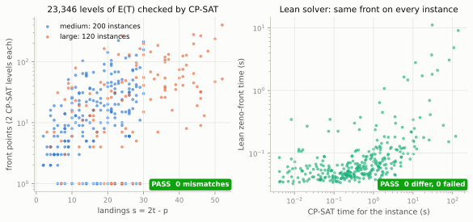
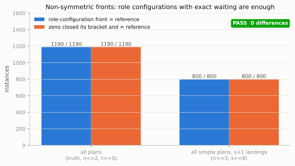
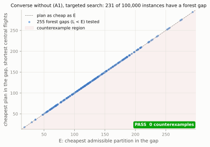
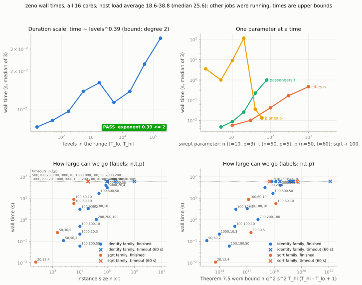
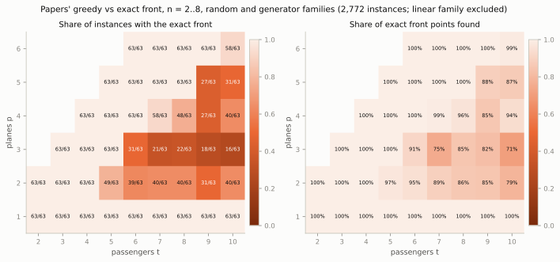
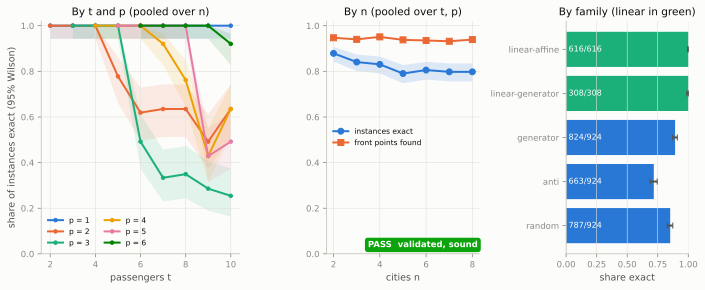

MultiZenoTravel
a Tunable Benchmark for Multi-Objective Planning with Known Pareto Front
Revised and extended version of arXiv:2304.14659 (2023).
Abstract. Multi-objective AI planning suffers from a lack of benchmarks exhibiting known Pareto Fronts. In this work, we propose a tunable benchmark generator, together with a dedicated solver that provably computes the true Pareto front of the resulting instances. First, we prove a proposition allowing us to characterize the optimal plans for a constrained version of the problem, symmetric durations that obey the triangular inequality, and then show how far this characterization extends to the non-symmetric and general problems. Second, we provide a constructive way to find all the Pareto-optimal plans and discuss the complexity of the algorithm: computing the makespan of a fixed list of cities is strongly NP-hard, yet the Pareto front is computable in pseudo-polynomial time. We provide an implementation that allows the solver to handle realistic instances in a reasonable time, and that returns each front with a certificate that an independent checker verifies; the central results, the checker and a solver are formally verified in Lean 4. We validate the solver and the theory in a seeded experiment campaign against exhaustive searches written independently. Finally, as a practical demonstration, we used this solver to find the Pareto-optimal plans between the two largest airports in the world, considering eleven large intermediate airports, spherical distances between airports and a made-up cost.
- Introduction
- Motivation, previous works, contribution and outline.
- MultiZenoTravel problems
- Instances, plans, Pareto fronts, assumptions and patterns.
- Symmetric MultiZenoTravel
- Proposition I: admissible partitions, link forests, and the converse under (A1) and (AΔ).
- Non-symmetric and general MultiZenoTravel
- Role configurations, waiting, \(B\bar A\bar B\) situations, and general graphs.
- Pareto Optimal Plans
- The exact method, its complexity, ZenoSolver, certificates and their verification.
- Experiments
- Validation of the solver and of the theory, performances, and examples of instances.
- Application: OpenFlights data
- The Pareto front of the transport from Atlanta to Beijing.
- Conclusion and Perspectives
- What is established, and the open problems.
- References
- The works cited in every section.
Introduction
The progress of algorithmics, the availability of more & more data and the dramatic increase of computational power drive a fast-pace evolution of the artificial intelligence (AI) field. As part of this change, the need to assess the performances of computational methods and to compare their merits is crucial. Many of the core fields of AI have set up standard benchmarks and competitions, in order to complement expert knowledge and analysis. In that regard, the automated planning community is at the edge of the state of the art, with the well-known International Planning Competition (IPC), hosting a large benchmark and using a common definition language.
A deterministic planning problem consists in selecting a sequence of actions (a plan) having an effect on a state, so that applying the plan on an initial state allows to reach a goal (partial) state, while optimizing a function of the plan’s value. This function is generally the total duration to reach the goal (the makespan), each action having a duration. However, the value function may very well represent another aspect of the problem, such as the cost of the plan, the energy it requires or the uncertainty produced by the actions.
In realistic problems, it is very often the case that several such objective functions exist and are contradictory. For example, a short plan may be costly, while a cheap plan may take a long time. In such a setting, using a linear combination of those objective functions falls back to introducing a bias about the preferences of the operational user. However, preferences cannot always be modelled easily in practice, e.g. the user may decide based on political information. In addition, the knowledge of the feasible compromises between the objectives may, in fact, influence the decision maker simply because it gives additional information about the problem itself. For instance, if the two objectives are a cost and a risk, the decision maker might revise its risk appetite knowing that the increase of the risk by 1% beyond its initial acceptable risk threshold can lead to a 50% cost decrease.
This calls for the use of multi-objective optimization, where the problem is actually modelled with several objective functions, and the output of the solver is a set of solutions that are non-dominated by other solutions, regarding the objectives. The weak dominance of a \(d\)-dimensional point \(\vec a\) over point \(\vec b\) is defined as \(\vec a \preceq \vec b \iff a_j \le b_j\) for \(j = 1, \dots, d\). A set of points \(P \subseteq X\) is then defined as Pareto-optimal if every point of \(X\) is weakly dominated by a point of \(P\), all its points being non-dominated by each other. The output of solving such a problem is thus a set of solutions ordered as a “Pareto front”. That is, for a problem with two objective functions, a set of points ordered along a monotonic function. Operationally, the user is still in charge of taking the final decision, but the complexity of their decision has been drastically reduced to a \(d-1\) dimensional problem.
While real-world problems are often multi-objective in nature, few works actually consider their study in the automated planning area. The well known IPC does not propose benchmarks for such problems [VCM18, CP19] to this date. In fact, PDDL 3.0 explicitly offered hooks for several objectives [GHL+09], but the only organized competition tracks concerned aggregated objectives, tracks which were canceled in 2011.
Despite various work on benchmark generation [LDG+18, ADE+20, BF22] and extension to other planning problems [PF21], no truly multi-objective planning problem has been proposed apart from our line of work.
Previous Works
We have previously proposed a problem instance generator for such multi-objective planning problems [SSV06, KSV+13, QS15], extending the ZenoTravel [PW94] problem with an additional objective. Such problem sets are crucial for benchmarking optimization algorithms, especially when the optimum is known, as it allows for a rigorous comparison of the performances of solvers.
The original ZenoTravel problem [PW94] involves planes moving passengers between cities, while taking care of their fuel. Actions such as flying, boarding, deplaning or refueling take various time to complete, and a plane cannot fly without fuel. The objective is to minimize the makespan, while honoring passengers’ destinations.
The proof-of-concept of the MultiZenoTravel problem is based on a simplified ZenoTravel model [SSV06]. In this model, there are five connected cities (see Figure 1), planes may transport only one passenger at a time and there is only one flying speed. The main addition to the problem is that an additional objective is attached to all actions. This second objective is either a cost, which is additive (each plane has to pay the corresponding tax every time it lands in that city) or a risk (for which the maximal value encountered during the complete execution of a plan is to be minimized). In this first instance, three passengers can be moved across the cities.
The second version of the MultiZenoTravel problem [KSV+13] builds up on the proof-of-concept, allows for 3, 6 and 9 passengers, and a 3-to-2 passengers-to-planes ratio, which makes up for very small instances, due to the combinatorial explosion of the solution space.
In [QS15], we introduced an algorithm to compute the true Pareto fronts of very large instances in reasonable time, and the first version of the ZenoSolver software is described. The article also provides a few typical instances that exhibit very different shapes of Pareto Fronts, for different levels of complexity. Unfortunately, this work suffers from two unrealistic assumptions. First, the distances are assumed to be symmetric around the central cities, that is to say \(\forall i, d_i = \bar d_i\). Second, the proof of the proposition which allows us to find Pareto-optimal plans relies on the following unrealistic assumption: \[\forall (i, j) \in [1, n]^2,\ d_i + d_j < d_{ij}.\] In other words, none of the instances generated under this assumption would respect a triangular inequality. Even if a benchmark does not necessarily have to be realistic by nature, this particular assumption drastically restrains the extrapolation of the performances of a solver observed on the benchmark to real life problems.
Our Contribution
In this work, we introduce a constructive way to find the Pareto-optimal solutions for the MultiZenoTravel problem. Our first contribution is to generalize from the original symmetric clique problem introduced in [SSV06] to a non-symmetric clique version and to a version with no particular assumption on the graph.
As a second contribution, we characterize the Pareto front of the symmetric clique problem when the flights between central cities obey the triangular inequality, as well as under the assumption of [QS15]: every point of the front is reached by a plan landing exactly \(2t - p\) times in central cities, and the lists of cities that can be flown, and how fast, are described by a parity condition on the way they are shared among the planes. This leads to an exact algorithm, pseudo-polynomial in the durations. For the non-symmetric clique problem, the same holds when no flight between central cities is shorter than a detour through \(C_I\) or \(C_G\), provided the makespan of a configuration accounts for the waiting it may force. We also show where the characterization stops: with short flights between central cities, and for the reduction of the general problem to a clique problem, which preserves the front only in some cases, for which we give exact methods on small instances.
In particular, we would like to insist on the fact that the triangular inequality assumption made in this paper contradicts the assumption of [QS15], so that the latter is not a special case of the former; both are covered here. In addition, even the technical implementation of the algorithm has been completely revised.
In addition, we present the ZenoSolver, a C++ implementation of the algorithm to solve MultiZenoTravel. It can output the instance definition in PDDL such that the generated instance can easily be used by other solvers. We demonstrate how to generate instances with different behavior by tuning the input parameters. We provide a theoretical and empirical study of the performances of ZenoSolver. Each front is returned with a certificate that a checker verifies without trusting the solver, and the main theorems, the checker and a solver of their own are formally verified in Lean 4.
Although we think that the primary utility of ZenoSolver is to generate benchmarks with known Pareto Front to study other solvers’ properties and behaviors, we provide a demonstration of the ZenoSolver on a problem using real data. This has been made possible by the extension of the solver capabilities from the symmetric clique problem to non-symmetric instances. Real data also come as arbitrary graphs, and the extension to arbitrary graphs is studied in detail, together with the part of it that is exact.
Outline
The plan of this paper is as follows: in MultiZenoTravel problems, we define three versions of the MultiZenoTravel problem, together with the plans and the assumptions. Symmetric MultiZenoTravel is dedicated to solve the symmetric MultiZenoTravel problem, followed by Non-symmetric and general MultiZenoTravel that focuses on the non-symmetric version of the problem. In the same section, we study how an instance of the general MultiZenoTravel problem can be reduced to a non-symmetric clique version, and when the reduction preserves the Pareto front.
In Pareto Optimal Plans, we detail how to compute the Pareto front and construct Pareto optimal plans, and we introduce the ZenoSolver, a C++ implementation of the algorithm, with its certificates and their verification in Lean. Experiments reports the validation of the solver and of the theory, its performances and examples of instances.
Finally, in Application, we study an (almost) realistic application for MultiZenoTravel and ZenoSolver using the OpenFlights database to find the optimal routes between the two largest airports in the world, and Conclusion and Perspectives closes with the open problems.
Statements, proofs and formal status. Results keep the numbering of the theory note, which gives every proof in full. Each cited result links to its entry in the blueprint and carries a badge derived from the Lean kernel: machine-checked when the whole statement is proved in Lean, Lean definition for a definition, and informal when the proof is written but not formalised. Here, proofs are sketched in a few sentences. A gentler introduction to the problem, on a small example, is on the Problem page.
MultiZenoTravel problems
Instances, plans, Pareto fronts, assumptions and patterns
In this Section, we introduce three versions of the MultiZenoTravel problem: the symmetric clique MultiZenoTravel, the non-symmetric clique MultiZenoTravel and the general MultiZenoTravel. We then make precise what a plan is, together with its cost and its makespan, and the assumptions on durations used in the rest of the paper. Plans are defined flight by flight, with explicit departure times, so that waiting, passengers changing planes, empty flights and flights between central cities are part of the problem and not excluded by assumption. The characterization of the Pareto-optimal plans comes next: for the symmetric clique problem first, then for the non-symmetric and general problems.
Instances
Let us introduce some notations related to the planning problem briefly presented in the introduction: a non-symmetric clique MultiZenoTravel instance (schematic view) is defined by the following elements (§1.1 Lean definition):
- \(n\) central cities, organized as a clique in which every node is connected to \(C_I\) and \(C_G\), respectively the initial city and the goal city.
- \(c \in (\mathbb R^+)^n\), where \(c_i\) is the cost for landing in \(C_i\).
- \(D \in (\mathbb R^+)^{n \times n}\), where \(d_{ij}\) is the flying time between \(C_i\) and \(C_j\).
- \(d \in (\mathbb R^+)^n\), where \(d_i\) is the flying time between \(C_I\) and \(C_i\).
- \(\bar d \in (\mathbb R^+)^n\), where \(\bar d_i\) is the flying time between \(C_i\) and \(C_G\).
- \(p\) planes, initially in \(C_I\), that have a capacity of a unique person.
- \(t\) persons, initially in \(C_I\).
The goal of MultiZenoTravel is to carry all \(t\) persons, initially in \(C_I\), to \(C_G\) using \(p\) planes, minimizing both the makespan and the cost of the plan.
Flights are undirected: each one has a single duration, used in both directions, and there is no flight between \(C_I\) and \(C_G\). We write \(\mathrm{dur}(a, b)\) for the duration of the flight between \(a\) and \(b\); a flight between central cities may also be missing. Landing in \(C_I\) or \(C_G\) is free. Without loss of generality, all triples \((d_i, \bar d_i, c_i)\) are assumed to be pairwise distinct. Otherwise, the 2 cities can be “merged” and the resulting \(n-1\) cities problem is equivalent to the original \(n\) cities problem, as there exist no city capacity constraints. Finally, we only consider cases where \(t \ge p\), as the problem is otherwise trivial.
An instance of the symmetric clique MultiZenoTravel problem is an instance such that \(d = \bar d\). A general MultiZenoTravel instance is an instance such that the \(n\) central cities are organized as an arbitrary graph; it is defined in the general section.
Throughout the paper, we illustrate the definitions on the symmetric instance with \(n = 3\) cities, \(t = 3\) passengers and \(p = 2\) planes, durations \(d = (2, 3, 5)\), costs \(c = (9, 6, 1)\) and no flight between central cities (the file site/problem/example.dat, also used on the Problem page). Its Pareto front, as (cost, makespan), is \[(4, 20),\ (14, 16),\ (20, 14),\ (24, 12),\ (30, 10),\ (36, 8).\]
\[ \begin{array}{lllllll} p_1: & C_I & \overset{t_1}{\to} C_2 & \to C_I & \overset{t_2}{\to} C_3 & \overset{t_2}{\to} C_G & \\ p_2: & C_I & \overset{t_3}{\to} C_3 & \overset{t_3}{\to} C_G & \to C_2 & \overset{t_1}{\to} C_G & \end{array} \]
Figure 2 illustrates an admissible solution, of cost 14 and makespan 16. Note that the makespan for a plan is not necessarily the largest sum of the flights’ duration as some planes might have to wait for others. This would be the case for \(p_2\) waiting for \(t_1\) in \(C_2\), had it reached \(C_2\) before \(p_1\) dropped \(t_1\) there.
Plans
To reason about all plans, including those that wait, hand passengers over or fly between central cities, we fix their semantics (§1.2 Lean definition). A plan on a set \(Q\) of planes (all \(p\) planes unless stated otherwise) consists of
- for every plane \(k \in Q\), a route: a sequence of legs \((k, 1), \dots, (k, \nu_k)\). Leg \((k, j)\) flies an existing flight from \(v_{k,j-1}\) to \(v_{k,j}\) and departs at time \(e_{k,j}\), with \(v_{k,0} = C_I\), \(e_{k,1} \ge 0\), and \(e_{k,j+1} \ge a_{k,j} := e_{k,j} + \mathrm{dur}(v_{k,j-1}, v_{k,j})\);
- for every passenger, a journey: a non-empty sequence of legs whose first leg departs from \(C_I\) and whose last leg arrives in \(C_G\). Each leg departs from the city where the previous one arrives, no earlier than that arrival, and, if both legs belong to the same plane, at a later position of its route;
- capacity: the journeys are pairwise disjoint, and none repeats a leg.
The plan is feasible if every route ends in \(C_G\). Its cost \(C\) is the sum of the landing costs of all legs, with or without a passenger, and its makespan \(M = \max_k a_{k,\nu_k}\) is the time at which the last plane reaches \(C_G\) for the last time. \(\mathcal A\) is the set of pairs \((C, M)\) of feasible plans. The flight time \(F_k\) of plane \(k\) is the sum of the durations of its legs; its flights are sequential, so \(F_k \le M\).
Waiting is implicit: a plane or a passenger may depart later than it arrived. Boarding and deplaning take no time, several planes may be in a city at once, and a passenger may change planes in any city, any number of times. In Figure 2, \(t_1\) changes planes once, in \(C_2\).
Journeys may contain detours that serve nothing, and they can be removed:
Lemma 3.1 informal, parts in Lean Cleaning. Every plan can be changed, keeping all routes (hence its cost, makespan and flight times), so that every journey is clean: its first flight is its only flight departing from \(C_I\), and its last flight is its only flight arriving in \(C_G\).
Sketch. Cut each journey down to the part from its last departure from \(C_I\) to the first later arrival in \(C_G\); this is still a journey, and capacity only gets looser (full proof).
A plan is event-ordered if its legs admit a total order that extends every route and every journey and along which departure times do not decrease. With positive durations every plan is event-ordered. With zero durations, a passenger can ride a later leg of one plane and then an earlier leg of another at the same instant, in a cycle that no execution in time realises; such plans never improve the front (Corollary 6.10 informal, parts in Lean).
Requiring planes to finish in \(C_G\) does not change the front: if planes may end anywhere, with the makespan taken as the last arrival of any leg, the Pareto front is the same under the assumptions of the next section (Theorem 4.9 machine-checked). All the planes may thus be assumed to finish their respective sequence in \(C_G\).
ZenoSolver outputs each instance as a PDDL file1 for the domain pddl/multi-zeno-travel.pddl: a durative fly action that adds the landing cost to total-cost, instantaneous board and debark actions, and a predicate libre that enforces capacity one. Under \(\varepsilon\)-separation, PDDL plans and event-ordered plans correspond, with the same cost and makespans equal in the limit \(\varepsilon \to 0\) (Statement 1.2 informal); this correspondence is argued but not formalised. The Instances section describes the generator and the files.
Pareto fronts
For points \(y, z\) of the plane (cost, makespan), \(y \preceq z\) if \(y \le z\) in both coordinates. For a set \(\mathcal S\) of points, \(\mathrm{Min}\,\mathcal S\) is the set of \(z \in \mathcal S\) weakly dominated by no other point of \(\mathcal S\), and the Pareto front of an instance is \(\mathcal F = \mathrm{Min}\,\mathcal A\) (§1.5 Lean definition). We look for the front and for one plan per front point.
Every characterization of the front in this paper has two halves: a finite set of points that plans attain, and a proof that every plan is weakly dominated by one of them. The following lemma turns them into an equality of fronts.
Lemma 1.1 informal, parts in Lean Dominating subset. Let \(\mathcal S' \subseteq \mathcal S\) with \(\mathcal S'\) finite and every point of \(\mathcal S\) weakly dominated by a point of \(\mathcal S'\). Then \(\mathrm{Min}\,\mathcal S = \mathrm{Min}\,\mathcal S'\), and every point of \(\mathcal S\) is weakly dominated by a point of \(\mathrm{Min}\,\mathcal S\).
Assumptions
The results of this paper use the following assumptions (§1.4 Lean definition), each one only where stated. The first two are the triangular inequality and the symmetry assumption:
Assumption: \(\forall (a, b, x),\ \mathrm{dur}(a, x) + \mathrm{dur}(x, b) \ge \mathrm{dur}(a, b)\) whenever the three flights exist \(\hfill\) (AΔ)
Assumption (Symmetry): \(\forall i \in [1, n],\ d_i = \bar d_i\) \(\hfill\) (S)
The assumption of [QS15], in a non-strict form, and its non-symmetric counterpart state that flights between central cities are useless, that is, never faster than a detour through \(C_I\) or \(C_G\):
Assumption: under (S), \(\forall (i, j),\ d_{ij} \ge d_i + d_j\) for every existing flight \(\hfill\) (A1)
Assumption: \(\forall (i, j),\ d_{ij} \ge \min(d_i + d_j,\ \bar d_i + \bar d_j)\) for every existing flight \(\hfill\) (A1-NS)
Finally, a weak form of the triangular inequality through the hubs is used for waiting:
Assumption: \(\forall (i, z),\ \bar d_i \le d_i + d_z + \bar d_z\) and \(d_i \le \bar d_i + \bar d_z + d_z\) \(\hfill\) (AΔ-path)
- implies (AΔ-path), and so does (AΔ) whenever the flight between \(i\) and \(z\) exists. Under (S), (A1) and (AΔ) hold together only when \(d_{ij} = d_i + d_j\): the first allows flights between central cities longer than the detour through a hub, and the second allows them as short as \(|d_i - d_j|\). Every PDDL problem the generator writes is symmetric, and gives a flight between central cities the duration \(d_i + d_j + 100\), so it satisfies (A1).
Notation. We write \(s = 2t - p\), so that \(s \ge p\) and \(s \equiv p \pmod 2\), and \(\kappa = \lceil s/p \rceil\) (Notation informal). For a multiset \(Y\) of central cities, \(Y(i)\) is the multiplicity of \(i\), \(|Y|\) its size, \(c(Y) = \sum_{w \in Y} c_w\) its cost, and \(\delta(Y) = \sum_{w \in Y} d_w\) and \(\bar\delta(Y) = \sum_{w \in Y} \bar d_w\) its durations; under (S), its load is \(\ell(Y) = 2\delta(Y)\). A partition of \(X\) over the planes is a family of groups \(X_1, \dots, X_p\) with \(X_1 + \dots + X_p = X\), group \(X_k\) being the cities in which plane \(k\) lands.
Patterns
Cut the sequence of a plane at every visit to \(C_I\) or \(C_G\). Each piece, from one of them to the next, is a pattern (a segment in the blueprint). As there is no flight between \(C_I\) and \(C_G\), every pattern lands in at least one central city. Depending on the cities it starts and ends in, a pattern is of one of four types, denoted by \(A\), \(\bar A\), \(B\) and \(\bar B\) (Figure 3). A pattern that lands in exactly one central city, of multiplicity 0, consists of two flights; we call it simple. We denote by \(|X|\) the number of the patterns \(X \in \{A, \bar A, B, \bar B\}\) in a given plan, and by \(F(\gamma)\) the flight time of a pattern \(\gamma\).
In Figure 2, \(p_1\) performs a \(B\) in \(C_2\) and an \(A\) in \(C_3\), and \(p_2\) an \(A\) in \(C_3\) and a \(\bar B\) in \(C_2\). Only the patterns \(A\) and \(\bar A\) change from \(C_I\) to \(C_G\) or back, and a plane goes from \(C_I\) to \(C_G\), so its patterns of these two types alternate \(A, \bar A, \dots, A\) (Lemma 2.1 informal, parts in Lean). We deduce the following property on the cardinal of each pattern in any feasible plan.
Property II: In every feasible plan,
- \(|A| + |B| \ge t\);
- \(|A| + |\bar B| \ge t\);
- \(|A| = |\bar A| + p\).
Proof: The patterns \(A\) and \(B\) are the only ones that start with a flight from \(C_I\), and the first flights of the journeys are distinct flights from \(C_I\), so a feasible plan has at least \(t\) of those patterns. Apply the same reasoning to \(C_G\) with \(A\) and \(\bar B\), whose last flight arrives in \(C_G\), to prove the second point. The third point is Lemma 2.1, summed over the \(p\) planes. \(\square\)
Corollary II: A feasible plan performs at least \(2t - p\) patterns, hence lands at least \(2t - p\) times in central cities (Lemma 3.2 machine-checked).
Proof: By Property II, the number of patterns is \(|A| + |\bar A| + |B| + |\bar B| = (|A| + |B|) + (|A| + |\bar B|) - p \ge 2t - p\), and each pattern lands in a central city. \(\square\)
With fewer planes than passengers, some planes have to come back to \(C_I\), and every return costs a landing. In Figure 2 the bound is reached: the plan lands \(2t - p = 4\) times. The next section shows that, in the symmetric case, the Pareto front is always reached by such plans, and which lists of \(2t - p\) cities can be flown, and how fast.
Symmetric MultiZenoTravel
Proposition I: the Pareto front is reached with exactly 2t − p central cities
The method to find the Pareto Front of any general MultiZenoTravel instance consists of three steps. First, we provide an efficient algorithm to find the Pareto Front for any symmetric clique MultiZenoTravel instance. Then, we show that for the non-symmetric version of the problem the method still applies when flights between central cities are not shorter than a detour through \(C_I\) or \(C_G\), provided waiting is accounted for, and that it does not otherwise. Last, we study the transformation of any instance of the general MultiZenoTravel problem into a non-symmetric clique version, and the cases in which it preserves the Pareto front. This section covers the first step; it corresponds to §2 to §4 of the theory note.
The following proposition is the cornerstone of the method to identify and construct the Pareto Set of any instance:
Proposition I: Assume (S), and (AΔ) or (A1). Every point of the Pareto front is attained by a plan where exactly \(2t - p\) (possibly identical) central cities are used by a plane.
Under (A1), Proposition I is Theorem 4.7 machine-checked together with Corollary 4.8 machine-checked; under (AΔ), it is Theorem 4.10 machine-checked, from which Corollary 4.12 informal, parts in Lean carries Corollary 4.8 over.
By Corollary II, no plan uses fewer than \(2t - p\) central cities, so Proposition I reduces the search to lists of \(2t - p\) cities. It is a statement about the front: with landing costs of zero, a Pareto-optimal plan may land more often. With one city of duration 1 and cost 0, \(p = 3\) and \(t = 5\), the front is \(\{(0, 6)\}\), attained by planes landing 3, 3 and 1 times; the plane landing once can add a pattern \(\bar A\) and a pattern \(A\) within its slack, and the resulting plan, with 9 landings, still attains \((0, 6)\).
The goal of this section is to establish the proof of Proposition I for the Symmetric case. For that purpose, we first describe which lists of \(2t - p\) cities can be flown, and how fast. We then show that every plan is dominated by one of them, first under the assumption (A1) of [QS15], then under the triangular inequality (AΔ). Precisely, with \[M(X) = \min\Big\{\max_k \ell(X_k) : X_1, \dots, X_p \text{ an admissible partition of } X\Big\},\] the front is the Pareto set of the pairs \((c(X), M(X))\) over the lists \(X\) of \(2t - p\) cities.
Admissible partitions
A list of \(2t - p\) cities does not hold any information about which plane will land in a particular city. Assign to each plane \(k\) the cities \(X_k\) in which it lands: when can the partition \(X_1, \dots, X_p\) be flown with simple patterns? By Lemma 2.1, a plane performs one more \(A\) than \(\bar A\), so a plane that performs only those patterns lands an odd number of times. A plane that lands an even number of times has to perform a pattern \(B\) or \(\bar B\), that is, to leave a passenger in a central city for another plane, or to take one left there by another plane. These hand-offs pair up at each city. Admissibility records exactly this bookkeeping, modulo 2.
Definition 2.2 Lean definition Admissible partition. A parity matrix for \(X_1, \dots, X_p\) is a matrix \(h \in \{0, 1\}^{p \times n}\) such that
- (h1) \(h_{k,i} = 1\) implies \(X_k(i) \ge 1\);
- (h2) \(\sum_i h_{k,i} \equiv |X_k| + 1 \pmod 2\) for every plane \(k\);
- (h3) \(\sum_k h_{k,i} \equiv 0 \pmod 2\) for every city \(i\).
The partition is admissible if it has a parity matrix.
Here \(h_{k,i} = 1\) means that plane \(k\) takes part in an odd number of hand-offs in city \(i\). (h2) asks a plane with an even group, an even plane, to do so in an odd number of cities, and (h3) pairs the hand-offs of every city. An empty group would need an odd number of marked cities in which it does not land, so admissible partitions have non-empty groups. The condition reads more simply on a graph.
Lemma 2.4 informal Component form. Let \(H\) be the bipartite graph on planes and cities with an edge between \(k\) and \(i\) whenever \(X_k(i) \ge 1\). The partition is admissible if and only if every connected component of \(H\) contains an even number of even planes.
Sketch. A parity matrix is a set of edges of \(H\) with odd degree exactly at the even planes, so each component has an even number of them; conversely, such a set is built bottom-up in any spanning forest of \(H\) (full proof).
On the example instance, the groups \(\{2, 3\}\) and \(\{2, 3\}\) are admissible: both planes are even, and they share cities. The groups \(\{1, 1\}\) and \(\{3, 3\}\) are not: each plane is even, but they share no city, so each would have to hand a passenger to a plane that never comes to its city. Two odd groups, such as \(\{1\}\) and \(\{1, 1, 1\}\), are always admissible, and Lemma 2.9 informal shows that a partition with \(\sum_k |X_k| \equiv p \pmod 2\) is admissible as soon as some city belongs to every even group.
(BB̄)-pairings and link forests
A (\(B\bar B\))-pairing in city \(i\) is a pattern \(B\) of one plane and a pattern \(\bar B\) of another plane, both in \(i\), carrying the same passenger: the first plane leaves it in \(i\), the second takes it to \(C_G\). The parity matrix says in which cities the pairings are, but not between which planes. A link forest says both.
Definition (link forest) Lean definition A link forest for \(X_1, \dots, X_p\) is a forest \(\Lambda\) on the planes whose edges carry city labels, such that
- (F1) for every plane \(u\) and city \(i\), at most \(X_u(i)\) edges at \(u\) are labelled \(i\);
- (F2) \(r_u := |X_u| - \deg_\Lambda(u)\) is odd for every plane \(u\).
An edge between \(u\) and \(v\) labelled \(i\), a link in \(i\), is a \((B\bar B)\)-pairing; the \(r_u\) other landings of \(u\), its free landings, are performed as patterns \(A, \bar A, \dots, A\).
Lemma 2.6 machine-checked Link forest. A partition is admissible if and only if it has a link forest.
Sketch. Counting the labels of a link forest at each plane gives an integer parity matrix, which reduces mod 2 to a parity matrix (Lemma 2.3 informal). Conversely, take a parity matrix supported in a spanning forest of \(H\), pair the planes marked in each city, and check that the pairs form no cycle (full proof).
When \(|X| = 2t - p\), Corollary 2.7 informal bounds the structure: a link forest has at most \(t - p\) links, and each of its trees has at most \(q_{\max} = \min(p, t - p + 1)\) planes.
Constructing the plan
Theorem 4.1 machine-checked Assume (S). For every list \(X\) of \(2t - p\) cities and every admissible partition \(X_1, \dots, X_p\) of \(X\), there is a feasible plan whose central landings are exactly \(X\) (so its cost is \(c(X)\)), in which plane \(k\) flies for \(\ell(X_k)\) and performs at most one pattern \(\bar B\), and whose makespan is \(\max_k \ell(X_k)\). The plan uses no flight between central cities.
The construction roots every tree of a link forest at a plane. For a link in \(i\) between a parent \(u\) and a child \(v\), \(u\) performs the pattern \(B\) and \(v\) the pattern \(\bar B\). The western part of each pairing is performed as early as possible, and its eastern part as late as possible: each plane flies its patterns \(B\) first, from time 0, then its free landings as patterns \(A\) and \(\bar A\), then its pattern \(\bar B\) if it has a parent. A plane has at most one parent, so it performs at most one \(\bar B\), at the end of its sequence. That \(\bar B\) may have to wait for the passenger, but the parent flies its patterns \(B\) first, so the wait ends within the parent’s own duration, and no plane finishes later than its load or its parent’s.
Sketch. The child \(v\) arrives in \(i\) at \(\ell(X_v) - d_i\), and the parent’s drop-off arrives there by \(\tau_u - d_i\), where \(\tau_u \le \ell(X_u)\) is the duration of \(u\)’s patterns \(B\). So \(v\) is back in \(C_G\) by \(\max(\ell(X_v), \ell(X_u))\), and every plane flies exactly \(\ell(X_k)\) (full proof).
zeno --plans (\(I = C_I\), \(G = C_G\); dashed flights are empty). The partition is \(X_1 = X_2 = \{2, 3\}\) with one link in \(C_2\), \(p_1\) being the parent: \(p_1\) performs a \(B\) in \(C_2\) and then an \(A\) in \(C_3\), and \(p_2\) an \(A\) in \(C_3\) and then a \(\bar B\) in \(C_2\). \(t_1\) waits in \(C_2\) from time 3 to 13; no plane waits. Both loads are \(2(3 + 5) = 16\).
A lower bound for every plan
A first lower bound on the cost of every plan comes from forgetting admissibility. It needs a bound on the duration of a pattern.
Lemma 3.3 informal, parts in Lean Pattern durations. Let a pattern \(\gamma\) visit the central cities \(x_1, \dots, x_m\) in this order.
(a) Under (S), \(F(\gamma) \ge d_{x_1} + d_{x_m} \ge 2\min(d_{x_1}, d_{x_m})\).
(b) Under (AΔ), for every \(j\), \(F(\gamma) \ge d_{x_j} + \bar d_{x_j}\) for patterns \(A\) and \(\bar A\), \(F(\gamma) \ge 2 d_{x_j}\) for \(B\) and \(F(\gamma) \ge 2\bar d_{x_j}\) for \(\bar B\).
(c) A simple pattern in \(x\) lasts exactly \(d_x + \bar d_x\) (\(A\), \(\bar A\)), \(2 d_x\) (\(B\)) or \(2\bar d_x\) (\(\bar B\)).
Lemma 3.4 machine-checked Relaxation. Assume (S). For every feasible plan with cost \(C\) and makespan \(M\) there are non-empty multisets \(Y_1, \dots, Y_p\) with \(\sum_k |Y_k| = 2t - p\), \(c(Y_1 + \dots + Y_p) \le C\) and \(\ell(Y_k) \le F_k \le M\) for every \(k\). Hence, with integer durations, \(C \ge L(\lfloor M/2 \rfloor)\), where \[L(T) = \min\Big\{c(Y) : Y = Y_1 + \dots + Y_p,\ |Y| = 2t - p,\ Y_k \ne \emptyset \text{ and } \delta(Y_k) \le T \text{ for all } k\Big\}.\] No assumption on the flights between central cities is needed.
Sketch. Charge each pattern to whichever of its first and last central cities has the smaller \(d\), which by Lemma 3.3(a) costs at most half its flight time in load; by Corollary II there are at least \(2t - p\) patterns, at least one per plane, and their charged landings are distinct (full proof).
\(L\) is the minimisation that defines the front, without admissibility. Wherever it meets the least cost of an admissible partition, the front is known whatever the flights between central cities; this is the common case (certificates).
Proof of Proposition I under the assumption of [QS15]
Under (A1), a flight between central cities can always be replaced by a detour through \(C_G\): using the same plane, the passenger on board flies to \(C_G\) instead, and the plane flies on to the next city, arriving no later. The plan then only performs simple patterns, which we read through the passengers they carry.
Definition 4.2 Lean definition Role configuration. A role configuration assigns to each plane \(k\) three multisets of central cities, its patterns \(B\) (\(\mathrm{Dr}_k\), drop-offs), \(\bar B\) (\(\mathrm{Pk}_k\), pick-ups) and \(A\) or \(\bar A\) (\(\mathrm{Cr}_k\), crossings), with \(|\mathrm{Cr}_k|\) odd and the per-city balance \(\sum_k \mathrm{Dr}_k = \sum_k \mathrm{Pk}_k\). Its passenger count is \(\sum_k \big(|\mathrm{Dr}_k| + (|\mathrm{Cr}_k| + 1)/2\big)\), its cost is \(\sum_k c(\mathrm{Dr}_k + \mathrm{Pk}_k + \mathrm{Cr}_k)\), and the role load of plane \(k\) is \[\lambda_k = 2\delta(\mathrm{Dr}_k) + 2\bar\delta(\mathrm{Pk}_k) + \delta(\mathrm{Cr}_k) + \bar\delta(\mathrm{Cr}_k).\]
Under (S), \(\lambda_k = \ell(X_k)\) for the group \(X_k = \mathrm{Dr}_k + \mathrm{Pk}_k + \mathrm{Cr}_k\). Three lemmas connect plans, role configurations and partitions; call a plan simple if all its patterns are simple.
- Lemma 4.3 informal, parts in Lean (direct selection): in a simple plan with clean journeys every journey is \(C_I \to x \to C_G\), and selecting patterns by their role in the journeys gives a role configuration with passenger count at least \(t\), cost at most \(C\) and \(\lambda_k \le F_k\).
- Lemma 4.4 machine-checked (shrinking): deleting two crossings, or a \((B\bar B)\)-pairing, brings the passenger count down to exactly \(t\) without increasing anything.
- Lemma 4.5 machine-checked (parity): the groups of a role configuration with passenger count \(t\) form an admissible partition of \(2t - p\) cities, with parity matrix \(h_{k,i} = (\mathrm{Dr}_k(i) + \mathrm{Pk}_k(i)) \bmod 2\).
Theorem 4.7 machine-checked Converse. Assume (S) and (A1). For every feasible plan with cost \(C\), makespan \(M\) and flight times \(F_k\), there is an admissible partition \(X_1, \dots, X_p\) of a list \(X\) of \(2t - p\) cities with \(c(X) \le C\) and \(\ell(X_k) \le F_k \le M\) for every \(k\).
Sketch. Replace every flight \(a \to b\) between central cities by \(a \to C_G \to b\): by (S) and (A1) the plane reaches \(b\) no later, the landings are unchanged, and a passenger on board is delivered in \(C_G\). Then clean the journeys (Lemma 3.1) and apply Lemmas 4.3, 4.4 and 4.5 (full proof).
With Theorem 4.1 and Lemma 1.1, this proves Proposition I under (A1), in the following precise form.
Corollary 4.8 machine-checked Assume (S) and (A1). Then \[\mathcal F = \mathrm{Min}\,\mathcal X, \qquad \mathcal X = \{(c(X), M(X)) : |X| = 2t - p,\ M(X) < \infty\},\] and every point of \(\mathcal F\) is attained by a plan with exactly \(2t - p\) central landings.
Table 1 lists an admissible partition for each point of the example instance. Every point uses two even groups and one \((B\bar B)\)-pairing. Groups of sizes 1 and 3 put three landings on one plane; \(\{1\}, \{1, 1, 1\}\) for instance costs 36 with makespan 12, and is dominated by \((24, 12)\).
zeno --plans prints. In each, \(p_1\) performs the pattern \(B\) of the pairing and \(p_2\) the pattern \(\bar B\).
| Front point | \(X_1\) | \(X_2\) | Pairing | Loads |
|---|---|---|---|---|
| \((36, 8)\) | \(\{1, 1\}\) | \(\{1, 1\}\) | in \(C_1\) | 8, 8 |
| \((30, 10)\) | \(\{1, 2\}\) | \(\{1, 2\}\) | in \(C_1\) | 10, 10 |
| \((24, 12)\) | \(\{2, 2\}\) | \(\{2, 2\}\) | in \(C_2\) | 12, 12 |
| \((20, 14)\) | \(\{1, 3\}\) | \(\{1, 3\}\) | in \(C_1\) | 14, 14 |
| \((14, 16)\) | \(\{2, 3\}\) | \(\{2, 3\}\) | in \(C_2\) | 16, 16 |
| \((4, 20)\) | \(\{3, 3\}\) | \(\{3, 3\}\) | in \(C_3\) | 20, 20 |
The same holds when planes may finish anywhere, as in PDDL problems without goals on the planes:
Theorem 4.9 machine-checked Bridge. Assume (S) and (A1). The Pareto front of the variant in which planes may end anywhere, the makespan being the last arrival of any flight, equals \(\mathcal F\).
Sketch. Remove flights between central cities and clean as in Theorem 4.7, delete every flight after a plane’s last flight with a passenger, and complete a sequence that ends with \(C_I \to x\) by \(x \to C_G\). The planes left without flights are added back one at a time by Lemma 4.6 machine-checked, which gives a new plane one city taken from the others without raising the cost or the largest load (full proof).
Proof of Proposition I under the triangular inequality
Without (A1), the detour through \(C_G\) can be longer than the flight it replaces, so a pattern may visit several central cities while its duration pays for only one of them. Each pattern can still be reduced: by Lemma 3.3(b), under (S) and (AΔ), a pattern lasts at least twice the duration \(d_x\) of every city \(x\) it visits, so a simple pattern of the same type in any of these cities, or in a city of smaller duration, is no longer, and lands only once. Reducing patterns one by one does not conclude, however. After the reduction, the passenger left by a pattern \(B\) may be taken by a pattern \(\bar B\) in another city, and moving both to the city of smaller duration requires two landings there, which may cost more than the two landings they replace. The proof below does not follow passengers at all.
Theorem 4.10 machine-checked Converse without (A1). Assume (S) and (AΔ). For every feasible plan with cost \(C\), makespan \(M\) and flight times \(F_k\), there is an admissible partition \(X_1, \dots, X_p\) of a list \(X\) of \(2t - p\) cities with \(c(X) \le C\) and \(\ell(X_k) \le F_k \le M\) for every \(k\). The same holds for a plan on any set \(Q\) of planes with \(t \ge |Q|\), with \(|Q|\) in place of \(p\).
Sketch. Each pattern is reduced to a city of duration at most the largest \(d\) it visits, provided some landing of the plan pays for it. Planes that share a central city form components, whose parities Corollary II fixes; \((B\bar B)\)-pairings between planes are laid along a spanning forest of the sharing graph so that every plane gets the right parity, and pairings that meet at one pattern are re-paired, each moved to the city of smaller duration together with the landing that pays for it, until every pattern carries at most one. The pairings then define an integer parity matrix (Lemma 2.3), and Lemma 4.11 machine-checked removes landings two at a time down to \(2t - p\) (full proof).
The proof uses (AΔ) only through the inequality \(F(\gamma) \ge 2d_x\) for every central city \(x\) of a pattern \(\gamma\), which also holds under (A1), so it is a second proof of Theorem 4.7. Under (S) alone, the same inequality holds with \(d_x\) replaced by the shortest flight time \(d'_x\) from \(x\) to \(C_I\) or \(C_G\), so the admissible optimum computed with the durations \(d'\) is a lower bound for every plan, next to \(L\). Everything built on Theorem 4.7 carries over:
Corollary 4.12 informal, parts in Lean Under (S) and (AΔ), Corollary 4.8, Theorem 4.9, Proposition 7.1, the front statements of Propositions 7.8 and 7.9 hold, and forest gaps of a certificate are sound.
This proves Proposition I under (AΔ). Theorem 4.10 is machine-checked in Lean, as Feasible.exists_admissible_ATri, and so are three parts of Corollary 4.12 that follow from it: Corollary 4.8 under (AΔ) (minimal_achievable_iff_multisetPoints_ATri), and the correctness of the verified solver and of the certificate checker under (AΔ) (solveFront_isParetoFront_ATri, Cert.check_sound_ATri). Independently of the proof, the experiment E6 searched the gaps where \(L\) lies below the admissible optimum, on small instances with the shortest flights between central cities the triangular inequality allows, and found no plan cheaper than that optimum.
The assumption is needed
Without (A1) and (AΔ), a plan can beat every admissible partition, so Proposition I needs some assumption on the flights between central cities.
Example 4.13 informal The hypothesis matters. Take \(d = (2, 3, 9, 11)\), \(c = (50, 44, 17, 0)\), \(t = 6\) and \(p = 3\), so \(2t - p = 9\), and flights between central cities \(d_{12} = 1\), \(d_{13} = 5\), \(d_{14} = 6\), \(d_{23} = 3\), \(d_{24} = 6\), \(d_{34} = 1\). They satisfy neither (A1) nor (AΔ): \(d_4 = 11 > d_{34} + d_3 = 10\). The front of admissible partitions has the consecutive points \((264, 34)\) and \((228, 40)\), so every admissible partition with makespan below 40 costs at least 264. A plan has makespan 39 and cost \(260 = L(19)\).
In that plan, one plane performs the pattern \(C_I \to C_4 \to C_3 \to C_I\): it leaves a passenger in \(C_4\) at time 11 and comes back through \(C_3\), in \(1 + 9 < d_4\), so its pattern lasts \(21 < 2 d_4\). The plan was found with an integer flow model, simulated, and confirmed with a second solver (computed). Under (S) alone, the exact front is open; \(L\) and the admissible optimum with the durations \(d'\) remain lower bounds.
In conclusion, we proved that for the Symmetric MultiZenoTravel problem, under the triangular inequality as well as under the assumption of [QS15], every point of the Pareto front is attained by a plan using exactly \(2t - p\) central cities, flown without waiting from an admissible partition. This will allow a constructive algorithm to drastically reduce the search space of feasible and Pareto-optimal plans (Pareto Optimal Plans).
Non-symmetric and general MultiZenoTravel
Waiting, BĀB̄ situations, and the reduction of general graphs to clique instances
This section relaxes the assumption (S), then the assumption that every central city is joined to \(C_I\) and \(C_G\). It corresponds to §6 of the theory note.
Non-Symmetric Clique MultiZenoTravel
In this section, we relax the Assumption (S). As a result, the previous method does not work in the particular case a \((B\bar B)\)-pairing is not possible. More precisely, it happens when there is no choice of cities to perform a \((B\bar B)\)-pairing because for two cities \(C_i\) and \(C_j\) (resp. for \(B\) and \(\bar B\)) we have \(d_i < d_j\) and \(\bar d_j < \bar d_i\). In such case, the \((B\bar B)\)-pairing on \(C_i\) (resp. \(C_j\)) would increase the duration of the pattern \(\bar B\) (resp. \(B\)) by \(2(\bar d_i - \bar d_j)\) (resp. \(2(d_j - d_i)\)). As a result, without any other change, the transformed plan has a larger total flight duration for at least one plane which may result in a larger makespan.
Two regimes must be distinguished. When no flight between central cities is shorter than a detour through \(C_I\) or \(C_G\), assumption (A1-NS), the method carries over with durations that depend on the role of each landing, provided the makespan accounts for the waiting it may force. When such flights are shorter, plans that move passengers between central cities, the \(B\bar A\bar B\) situations among them, can beat every plan of \(2t - p\) simple patterns.
Role configurations
A pattern \(A\) or \(\bar A\) in \(C_w\) lasts \(d_w + \bar d_w\), a pattern \(B\) lasts \(2 d_w\) and a pattern \(\bar B\) lasts \(2\bar d_w\). Lists of cities are therefore replaced by role configurations (Definition 4.2 Lean definition): for each plane \(k\), the cities of its patterns \(B\) (\(\mathrm{Dr}_k\)), \(\bar B\) (\(\mathrm{Pk}_k\)) and \(A\) or \(\bar A\) (\(\mathrm{Cr}_k\)), balanced city by city, with the role load \(\lambda_k = 2\delta(\mathrm{Dr}_k) + 2\bar\delta(\mathrm{Pk}_k) + \delta(\mathrm{Cr}_k) + \bar\delta(\mathrm{Cr}_k)\).
Theorem 6.1 machine-checked Converse to role configurations. Assume (A1-NS). For every feasible plan with cost \(C\) and makespan \(M\) there is a role configuration on the \(p\) planes with passenger count \(t\), cost at most \(C\) and \(\lambda_k \le F_k \le M\) for every \(k\).
Sketch. Replace each flight \(a \to b\) between central cities by \(a \to h \to b\) through the hub \(h\) for which the detour is no longer, which exists by (A1-NS); clean the journeys, and apply the direct selection and shrinking lemmas (Lemma 4.3, Lemma 4.4; full proof).
Without (A1-NS), Lemma 6.2 informal still gives a lower bound \(L_{\rm NS}\) under (AΔ), by requiring the balance only in total rather than city by city, whatever the flights between central cities. The least cost \(E_{\rm NS}(T)\) of a role configuration with every \(\lambda_k \le T\) is the shortest path of a dynamic program over imbalance vectors, the per-city difference between patterns \(B\) and \(\bar B\) so far (Proposition 6.6 informal, parts in Lean); it is polynomial in \(n\) and \(2t - p\) for fixed \(t - p\).
Waiting
If a non-symmetric instance is highly imbalanced in durations, while performing a \((B\bar B)\)-pairing, there is a chance that the plane performing \(\bar B\) will have to wait. It implies that its makespan is not the sum of the durations of its patterns but the moment the passenger arrives in the central city, plus the remaining duration of its sequence.
Fix an order of the patterns \(B\) and of the patterns \(\bar B\) of every plane, and a link matching: in each city, which pattern \(B\) feeds which pattern \(\bar B\). The template flies every plane’s patterns \(B\) in order from time 0, then its patterns \(A\) and \(\bar A\), then its patterns \(\bar B\) in order, every flight departing as soon as possible, a pattern \(\bar B\) leaving its city only once its passenger is there. Let \(\mathrm{Pre}_u(j) = 2\sum_{j' < j} d_{\mathrm{Dr}_u[j']}\) be the duration of the patterns \(B\) that plane \(u\) flies before its \(j\)-th, and \(\mathrm{Suf}_v(l) = 2\sum_{l' > l} \bar d_{\mathrm{Pk}_v[l']}\) that of the patterns \(\bar B\) that plane \(v\) flies after its \(l\)-th.
Lemma 6.3 informal, parts in Lean Template. The template is a plan, and its makespan is \[M_{\rm tmpl} = \max\Big(\max_k \lambda_k,\ \max_{(u, j;\, v, l) \text{ linked in } C_i}\ \mathrm{Pre}_u(j) + d_i + \bar d_i + \mathrm{Suf}_v(l)\Big).\] Every plan that flies the same configuration with the same orders and matching has makespan at least \(M_{\rm tmpl}\). The least makespan of the configuration is the minimum of \(M_{\rm tmpl}\) over orders and matchings.
A link term is the length of a chain that no plan can shorten: the plane performing \(B\) flies its earlier patterns \(B\) and reaches \(C_i\), the passenger then needs \(\bar d_i\) to reach \(C_G\), and the plane performing \(\bar B\) still flies its later patterns \(\bar B\). With a single pattern \(\bar B\) per plane, as in the construction of Theorem 4.1, the chain never exceeds the loads:
Corollary 6.4 informal One pick-up never waits harmfully. Assume (AΔ-path). If every plane performs at most one pattern \(\bar B\), then \(M_{\rm tmpl} = \max_k \lambda_k\) for every order and matching. The same holds if every plane performs at most one pattern \(B\).
One may hope that waiting can always be avoided by choosing the orders and the matching well, so that the Pareto front would be the Pareto set of (cost, largest role load) over role configurations. This is Conjecture 6.5, and it is false.
Conjecture 6.5 informal No harmful waiting. Under (AΔ-path), every role configuration has orders and a matching with \(M_{\rm tmpl} = \max_k \lambda_k\); in a weaker form, the Pareto front is the Pareto set of (cost, \(\max_k \lambda_k\)) over role configurations.
Proposition 6.5 informal Harmful waiting. Take \(n = 2\) cities with \(d = (3, 19)\), \(\bar d = (3, 11)\), \(c = (5, 1)\), \(t = 7\) passengers, \(p = 4\) planes and no flight between central cities. The cheapest role configuration with every \(\lambda_k \le 73\) costs 14, but no plan of makespan at most 73 costs less than 18.
A configuration has \(2t - p = 10\) landings, so cost 14 means one landing in \(C_1\) and nine in \(C_2\). A pattern \(A\) or \(\bar A\) weighs 6 in \(C_1\) and 30 in \(C_2\), a \(B\) 6 and 38, a \(\bar B\) 6 and 22, which leaves one shape within 73: three planes perform an \(A\) and a \(B\) in \(C_2\) (load 68), and the fourth plane \(v\) an \(A\) in \(C_1\) and the three patterns \(\bar B\) in \(C_2\) (load \(6 + 3 \cdot 22 = 72\)). Every passenger left in \(C_2\) arrives there at time 19 or later, but \(v\) reaches \(C_2\) for its first \(\bar B\) at \(6 + 11 = 17\). It waits until 19, and its two other patterns \(\bar B\) take 44 more: it finishes at \(74 > 72\). The whole front was computed, by an oracle over role-configuration schedules, by the solver and by an exhaustive search over all plans (937 million states, plans with extra landings included): \[(10, 90),\ (14, 74),\ (18, 68),\ (22, 66),\ (26, 52),\ (34, 42),\ (38, 36),\ (42, 30),\ (50, 18),\] while ignoring waiting would add \((14, 72)\) and \((30, 50)\) (Figure 5).

Harmful waiting needs a plane with several patterns \(\bar B\) in a city \(C_y\) whose first one arrives before the earliest passenger left there, that is, a short phase of patterns \(A\) and \(\bar A\) with \(d_x + \bar d_x + \bar d_y < d_y\) for its crossing city \(x\). (AΔ-path) bounds \(\bar d\) by \(d\) but not \(d\) by \(\bar d\), so it does not prevent this. It is rare: in the experiment E5, random configurations waited harmfully at most 29 times in a million draws, and waiting changed the front of 9 of 150 instances shaped like Proposition 6.5 and of none of 150 uniform ones.
The non-symmetric Pareto front
Theorem 6.1 bounds the role loads of the configuration it selects, but not its waiting, since it pairs patterns \(B\) and \(\bar B\) by counts per city and not along the plan’s own hand-offs. The following theorem selects the pairings along the hand-offs, after removing those that the planes could have avoided. Plans with zero durations need care: Lemma 6.8 informal, parts in Lean shows that a plan fails to be event-ordered exactly when the relation “next flight on the plane or on the journey” has a cycle, that such a cycle passes through a city with \(d_x = \bar d_x = 0\), and that templates and the plans of Theorem 4.1 are event-ordered.
Theorem 6.9 machine-checked Schedulable domination. Assume (A1-NS). For every feasible plan with cost \(C\) and makespan \(M\), there are a role configuration on the \(p\) planes with passenger count \(t\) and cost at most \(C\), orders of its patterns \(B\) and \(\bar B\), and a link matching whose template has makespan at most \(M\). Neither an event order, nor (AΔ), nor (AΔ-path) is needed.
Sketch. Make the plan simple and clean, then rewire hand-offs by three moves (an exchange of the rest of the sequences of two planes that meet, a cut of a zero-time detour into a separate loop, and a splice of such a loop back into a sequence), each of which carries one more passenger through a single pattern, until every remaining hand-off goes forward in time. The hand-offs then form chains from a pattern \(B\) to a pattern \(\bar B\), which give the links, and along each chain the link term of Lemma 6.3 is at most \(M\) (full proof).
Corollary 6.10 informal, parts in Lean Non-symmetric front. Assume (A1-NS). Let \(\mathcal K\) be the set of pairs (cost, least makespan) of the role configurations on the \(p\) planes with passenger count \(t\), and \(\mathcal A_{\rm eo}\) the set of points of feasible event-ordered plans. Then \(\mathcal F = \mathrm{Min}\,\mathcal A_{\rm eo} = \mathrm{Min}\,\mathcal K\).
So under (A1-NS) a constructive algorithm can still focus on plans with \(2t - p\) central cities, with additional care for waiting. ZenoSolver brackets every level between the lower bounds \(L_{\rm NS}\) and \(E_{\rm NS}\) and the templates of the configurations it builds, which never wait when each plane performs at most one \(\bar B\) (Corollary 6.4). A gap between consecutive achieved points \((C_i, M_i)\) and \((C_{i+1}, M_{i+1})\) is closed by enumerating the configurations of cost below \(C_i\) whose loads are at most \(M_{i+1} - 1\), and computing the least makespan of each by a search over orders and matchings with the closed form of Lemma 6.3. Proposition 6.5 shows that the search can be needed. The experiment E4 compares the resulting fronts with exhaustive searches over all plans.
BĀB̄ situations
Without (A1-NS), a flight between central cities can be shorter than any detour through \(C_I\) or \(C_G\), and plans of simple patterns can miss the Pareto front: a first search found 11 such instances among 140. The natural candidates for the missing plans are the patterns with one flight between central cities.
Definition 6.17 informal Shuttle triple, split crossing. Let \(C_x \ne C_y\) be central cities joined by a flight. A shuttle from \(C_x\) to \(C_y\) is a pattern \(C_G \to C_x \to C_y \to C_I\) (type \(\bar A\)) that carries a passenger from \(C_x\) to \(C_y\). A \(B\bar A\bar B\) situation, or shuttle triple, is a pattern \(B\) in \(C_x\), a shuttle from \(C_x\) to \(C_y\) and a pattern \(\bar B\) in \(C_y\), carrying one passenger. A split crossing is a pattern \(C_I \to C_x \to C_y \to C_G\) (type \(A\)) whose flight between central cities is empty: its first flight leaves a passenger in \(C_x\), and its last flight carries another one from \(C_y\) to \(C_G\).
A shuttle and a split crossing fly the same three flights in opposite directions, but a split crossing is an \(A\), while a shuttle is an \(\bar A\), whose plane needs two more patterns \(A\) (Lemma 2.1). One may hope that \(B\bar A\bar B\) situations complete the front, as in the following conjecture. They do not.
Conjecture 6.7 informal Shuttle triples complete the front. Under (AΔ), the Pareto front is the Pareto set of (cost, least makespan) over role configurations extended with \(B\bar A\bar B\) situations.
Proposition 6.7 informal Shuttles are not enough. Take \(n = 2\), \(d = (1, 3)\), \(\bar d = (3, 1)\), \(d_{12} = 2\), \(t = 3\), \(p = 2\) and any costs. (AΔ) holds and (A1-NS) fails. Some plan has makespan 8, but every plan whose flights between central cities all lie in patterns \(\bar A\) has makespan at least 10. With \(c = (6, 1)\) the Pareto front is \(\{(4, 10), (15, 8)\}\), and plans with shuttles only, like role configurations, give \(\{(4, 10)\}\).
Sketch of the bound. A pattern \(A\) or \(\bar A\) lasts at least \(\min_x(d_x + \bar d_x) = 4\), and a plane with an \(\bar A\) performs at least three such patterns, so a plan of makespan below 12 whose flights between central cities lie in patterns \(\bar A\) has none. On the instance without that flight, Theorem 6.1 gives a role configuration with every load at most the makespan, and a case check on its four landings shows that some load is at least 10 (full proof).
This is the case of the beginning of this section: \(d_1 < d_2\) and \(\bar d_2 < \bar d_1\), so no \((B\bar B)\)-pairing within one city is short, as one costs \(2 d_x + 2\bar d_x = 8\) in either city. The split crossing enters at \(C_2\), next to \(C_G\), and leaves from \(C_1\), next to \(C_I\); it lets \(p_1\) leave a passenger in \(C_1\) and take another from \(C_2\) for 2 each, a pairing between two different cities. Split crossings do not complete the front either:
Proposition 6.18 informal One flight between central cities per pattern is not enough. In each instance below, (AΔ) holds and (A1-NS) fails.
(a) \(n = 2\), \(d = (1, 7)\), \(\bar d = (7, 1)\), \(d_{12} = 6\) (the least value (AΔ) allows), \(t = 5\), \(p = 2\), any costs. The least makespan of a plan is 32, reached with the pattern \(C_I \to C_2 \to C_1 \to C_2 \to C_1 \to C_G\). Plans whose patterns each make at most three central landings need 34, and role configurations 36.
(b) \(n = 3\), \(d = (1, 3, 2)\), \(\bar d = (3, 1, 2)\), flights \(C_1\)–\(C_3\) and \(C_2\)–\(C_3\) of duration 1 and none between \(C_1\) and \(C_2\), \(c = (0, 0, 1)\), \(t = 3\), \(p = 2\). The Pareto front is \(\{(0, 10), (1, 8)\}\); plans whose patterns make at most two central landings give \(\{(0, 10), (2, 8)\}\). The point \((1, 8)\) needs the split crossing routed through \(C_3\), \(C_I \to C_2 \to C_3 \to C_1 \to C_G\).
(c) \(n = 2\), \(d = (3, 8)\), \(\bar d = (8, 3)\), \(d_{12} = 5\), \(t = 7\), \(p = 3\). The least makespan, 41, needs a pattern that lands six times; with at most five central landings per pattern it is 43.
(d) \(n = 3\), \(d = (7, 1, 3)\), \(\bar d = (2, 6, 6)\), \(c = (4, 7, 4)\), \(d_{12} = 7\), \(d_{13} = 5\), \(d_{23} = 3\), \(t = 7\), \(p = 3\). The point \((73, 29)\) is on the front, reached by a plan with the pattern \(\bar B\): \(C_G \to C_3 \to C_1 \to C_3 \to C_G\), and no plan whose flights between central cities all lie in patterns \(A\) reaches makespan 29.
Parts (a) to (c) were established by exhaustive search over the plans of each class of patterns, and cross-checked with an integer flow model (computed). For (d), the exhaustive search gives the plan and the front point, but the claim about patterns \(A\) rests on the flow model alone, whose exactness for a class of patterns has no written proof; that claim is a sketch. The searches found no instance that needs more than six central landings in a pattern.
One lower bound holds for every plan, with no assumption at all.
Lemma 6.19 informal Cut bound. Let \(\Phi\) be the least flight time of a sequence of flights from \(C_I\) to \(C_G\). Every feasible plan has \(\sum_k F_k \ge (2t - p)\Phi\), so its makespan is at least \((2t - p)\Phi/p\). Under (AΔ), \(\Phi = \min_x(d_x + \bar d_x)\).
Sketch. With \(\phi(v)\) the least flight time from \(C_I\) to \(v\), each journey climbs at least \(\Phi\) in \(\phi\), journeys use distinct flights, and each plane climbs exactly \(\Phi\) more than it descends; adding up gives \(\sum_k F_k \ge 2t\Phi - p\Phi\) (full proof).
In Proposition 6.7 and in 6.18(a) and (c), the least makespan of all plans is this bound rounded up (8, 32 and 41), while role configurations stay above it. For clique instances without (A1-NS), \(L_{\rm NS}\) and the cut bound are lower bounds, plans built from role configurations and from the patterns above are upper bounds, and exact fronts come from exhaustive search or the flow model on small instances. In the searches, shuttles never improved a front, split crossings completed it on all but 2 of 600 random instances, and on 150 instances whose durations \(d\) and \(\bar d\) order the cities alike, flights between central cities never changed it. A combinatorial description of the front is open (perspectives).
General MultiZenoTravel
We now consider a connected weighted graph \(U = (V, E)\) such that \(|V| = n + 2\) and two arbitrary vertices named \(I\) and \(G\) (with weight 0), respectively for the initial and the goal cities, not joined by an edge. A MultiZenoTravel instance \(\Pi\) is defined by the triplet \((U, I, G)\); its plans are those of the model, with the edges of \(U\) as flights. We denote by \(\Lambda\) the set of paths over \(U\), and for any path \(q\), \(|q|\) is the number of cities in the path. We define the functions \(\phi\) (resp. \(\omega\)) as follows: \[\phi(q) = \sum_{0 \le i < |q| - 1} \mathrm{dur}(q_i, q_{i+1}), \qquad \omega(q) = \sum_{1 \le i < |q|} c_{q_i}.\] The function \(\phi\) provides the duration, while \(\omega\) provides the landing cost of the path. Notice that the first city in a path does not appear in \(\omega\) because the initial state is such that the planes are in the initial city.
The following algorithm \(f\) transforms the general MultiZenoTravel transport problem defined by \((U, I, G)\) into a non-symmetric clique problem:
- For each vertex \(i\) find all the simple paths from \(I\) to \(i\) (resp. from \(i\) to \(G\)) and denote this set \(\Lambda_{I \to i}\) (resp. \(\Lambda_{i \to G}\)).
- Construct a new clique instance such that for each \((w_i, e_i) \in \Lambda_{I \to i} \times \Lambda_{i \to G}\), there is a city of weight \(\omega(w_i) + \omega(e_i)\) (the cost of landing in \(C_i\) is counted only once) and an edge \(I \to i\) (resp. \(i \to G\)) of weight \(\phi(w_i)\) (resp. \(\phi(e_i)\)).
- For all couples of cities \((i, j)\) of the new instance, assign \(d_{ij} = +\infty\).
The reduced instance has no flight between central cities, so it satisfies (A1-NS), and its Pareto front is computed as above. Every city of \(f(U)\) stands for one way of reaching a central vertex and one way of leaving it, and a pattern of \(f(U)\) visits one city. A pattern of \(U\), from \(I\) or \(G\) to \(I\) or \(G\), may visit several central vertices and hand passengers over at any of them. The reduction is therefore exact in one direction only.
Proposition 6.12 informal A solution to the transformed problem is a solution to the generic problem. For every role configuration of \(f(U)\), every order and every link matching, \(U\) has a feasible plan with the configuration’s cost and the makespan of its template. Hence \(\mathcal F_{f(U)} \subseteq \mathcal A_U\).
Sketch. Fly the template of \(f(U)\) in \(U\), each flight between a hub and a city \((w, e)\) being replaced by the path it stands for. A single pattern \(B\) or \(\bar B\) is charged differently in \(U\) and in \(f(U)\), but the two patterns of a \((B\bar B)\)-pairing in one city cost together what \(f\) charges for them (full proof).
Proposition 6.13 informal adds that \(U\) and \(f(U)\) have the same least cost: with \(\kappa^\star\) the least landing cost of a path from \(I\) to \(G\), every plan of \(U\) costs at least \((2t - p)\kappa^\star\), and the cheapest point of \(\mathcal F_{f(U)}\) costs exactly that. The converse inclusion fails, already on a path.
Example 6.11 informal The reduction misses the front. Let \(U\) be the path \(C_I, a, b, C_G\) with durations \(1, 2, 1\) and \(c_a = c_b = 1\), with \(t = 3\) and \(p = 2\). Then \(f(U)\) has two cities, with \((d, \bar d, c) = (1, 3, 2)\) and \((3, 1, 2)\), and \[\mathcal F_{f(U)} = \{(8, 10)\}, \qquad \mathcal F_U = \{(8, 8)\}.\]
Each edge of the path separates \(C_I\) from \(C_G\), so the planes fly it towards \(C_G\) at least \(t = 3\) times and back at least \(t - p = 1\) time: \(4 \cdot (1 + 2 + 1) = 16\) time units in total, so one plane flies at least 8. In \(f(U)\), every role configuration has four landings of cost 2, and a \((B\bar B)\)-pairing in either city puts a load of 10 on one plane. The plan above does in one pattern what \(f(U)\) cannot: leave a passenger at one vertex, fly to the next one, and take another passenger there. This is the mechanism of the split crossings above. Giving \(f(U)\) flights between its cities does not repair the reduction either; its front then becomes \(\{(8, 10), (10, 8)\}\) (computed). On random small graphs, the two fronts differ on 342 of 4,000 paths, spokes, cycles and random graphs, and on none of 1,000 clique instances under (A1-NS).
The reduction is exact in three cases, and the general problem has an exact method of its own.
Proposition 6.15 informal Where the reduction is exact. \(\mathcal F_U = \mathcal F_{f(U)}\) when \(U\) is a clique instance satisfying (A1-NS), when \(p = 1\), and when \(t = p\).
Example 6.11 has \(p = 2\) and \(t = p + 1\), so the last two cases are sharp. Proposition 6.16 informal shows that, with integer durations of at least 1, integer flows of \(p\) plane units and \(t\) passenger units in the time-expanded network, passengers riding only where a plane flies, give the least cost \(R(M)\) of a plan of makespan at most \(M\), and that \(\mathcal F_U = \{(R(M), M) : R(M) < R(M - 1)\}\): the exact front of a general instance is computable, level by level, as an integer program.
On the complexity: In general the number of cities in \(f(U)\) is not polynomial in function of \(n\), the number of cities in \(U\), and thus, solving \(U\) through \(f(U)\) might be challenging w.r.t. the initial complexity of the problem and our algorithm. On top of that, the number of paths between two vertices can be up to super-exponential: a graph made of \(\sqrt n\) layers of \(\sqrt n\) vertices has \((\sqrt n)^{\sqrt n}\) paths between its ends, and computing the cardinal of the set of paths is already a \(\sharp P\)-complete problem [Val79].
Not every path is needed. A path is non-dominated if no other path between the same vertices has a landing cost and a duration both at most its own, one of them strictly smaller. Removing a city of a clique instance without flights between central cities that another city dominates in cost, \(d\) and \(\bar d\) does not change the front, so \(f(U)\) keeps its front when built from the pairs of non-dominated paths only (Proposition 6.14 informal). Some elements of the Pareto set, in the decision space, may be lost, but the Pareto front of \(f(U)\) is entirely found.
However, even in this case, the number of central cities in \(f(U)\) is function of the cardinal of the Pareto Set of non-dominated paths for each couple of cities in \(U\). In [Han80], Hansen proposed some pathological instances of bicriterion graphs such that the set of non-dominated paths between two extreme nodes is exponential in the number of nodes \(n\). Conversely, when the number of non-dominated paths of \(U\) is bounded by a polynomial of \(n\), the number of cities of the reduced instance is polynomial of \(n\).
In conclusion, the reduction of a general instance to a clique instance gives plans of the general instance and its exact least cost, and its exact Pareto front when the instance is a clique under (A1-NS), has one plane, or as many planes as passengers. In general, the exact front comes from the integer flows of Proposition 6.16, on small instances; a characterization in the spirit of Corollary 6.10 is open.
Pareto Optimal Plans
Computing the Pareto front exactly, its complexity, and the ZenoSolver with its certificates and their verification
We now focus on finding the Pareto Optimal Plans from the lists of \(2t - p\) cities, for the symmetric case: (S) holds throughout, and the statements about the front also need (A1) or, by Corollary 4.12 informal, parts in Lean, (AΔ). This section corresponds to §7 to §9 of the theory note. The algorithm page of the Solver section describes how the implementation carries out each step.
Definitions
Cost of a list: Given a list \(X\) of \(2t - p\) cities, the cost of any plan using only the cities in \(X\) is uniquely defined by \(c(X) = \sum_{i \in X} c_i\).
Makespan of a list: The makespan of a list is that of the shortest schedule that uses its cities in a feasible way. Only the least largest load \(M(X) = \min \max_k \ell(X_k)\) over the admissible partitions of \(X\) matters: by Theorem 4.1 it is the makespan of a schedule that never waits, and by Corollary 4.8, under (A1) or (AΔ), the Pareto front is the Pareto set of the pairs \((c(X), M(X))\).
The list \(X\) does not hold any information about which plane will land in a particular city, and choosing the partition is the hard part.
Theorem 8.1 informal Deciding \(M(X) \le 2T\), with \(d\), \(X\), \(p\) and \(T\) as input, is strongly NP-complete.
Sketch. Reduce from 3-Partition: \(3m\) cities of durations \(a_i\), each once in \(X\), \(p = m\) and \(t = 2m\). Every group is then odd by Lemma 2.4, and groups of duration at most \(B\) summing to \(mB\) must be triples (full proof).
Proposition 8.2 informal Fixed \(p\). For \(p = 2\) the problem stays NP-complete, even with positive durations. For every fixed \(p\) it is solvable in time polynomial in \(n\), \(s\) and \(T\), so for fixed \(p\) it is weakly NP-complete.
In particular, no greedy distribution of the durations of a list into \(p\) planes is optimal in general, unless P = NP. Distributing the longest durations first, each to the plane with the smallest current duration, misses front points (§5 informal, parts in Lean). With two cities of durations 6 and 10, two planes and five passengers, take the list of \(2t - p = 8\) cities with three landings in the slow city and five in the fast one. The greedy gives each plane a pattern \(A\) in the slow city first and ends with durations 52 and 68, while the groups \(\{10, 10, 10\}\) and \(\{6, 6, 6, 6, 6\}\), both odd and hence admissible, both last 60; the front point \((260, 60)\) of that instance is missed. The experiment E10 measures how often such a greedy is exact.
The method below never computes \(M(X)\) for a fixed list. It sweeps the makespans instead, and computes for each one the least cost over all lists at once.
Computing the Pareto front
Scale the durations to integers and divide them by their gcd \(g\). For an integer level \(T \ge 0\) let \[E(T) = \min\{c(X) : |X| = 2t - p,\ X_1, \dots, X_p \text{ admissible},\ \delta(X_k) \le T \text{ for all } k\},\] the least cost of an admissible partition whose loads are all at most \(2T\). \(E\) is non-increasing, and the relaxation \(L\) of Lemma 3.4 machine-checked is the same minimisation without admissibility, so \(L \le E\).
Proposition 7.1 machine-checked Under (S) and (A1), \(\mathcal F = \{(E(T), 2T) : T \in \mathbb N,\ E(T) < E(T-1)\}\) with \(E(-1) = \infty\), makespans in units of \(g\).
The Pareto front is read off the levels where \(E\) drops, and only a bounded range of levels matters.
Proposition 7.10 informal, parts in Lean Ends of the front. Assume (S), and let \(d_{\min} = \min_i d_i\), \(c_{\min} = \min_i c_i\) and \(d_{\rm cheap} = \min\{d_i : c_i = c_{\min}\}\).
(a) Every plan has makespan at least \(2 d_{\min}\kappa\), and some plan attains it.
(b) Every plan costs at least \((2t - p)\,c_{\min}\), and \(((2t - p)\,c_{\min},\ 2 d_{\rm cheap}\kappa)\) is the cheapest point of \(\mathcal F\).
(c) With integer durations, \(E(T) < \infty\) if and only if \(T \ge T_{\rm lo} := d_{\min}\kappa\), and \(E(T) = (2t - p)\,c_{\min}\) if and only if \(T \ge T_{\rm hi} := d_{\rm cheap}\kappa\). The same holds for \(L\).
Sketch. \(p\) non-empty groups of total size \(2t - p\) include one of size at least \(\kappa = \lceil (2t - p)/p \rceil\), which gives both lower bounds through Lemma 3.4; they are attained by spreading \(2t - p\) copies of one city over the planes, which is admissible by Lemma 2.9 informal (full proof).
On the example instance (\(2t - p = 4\), \(\kappa = 2\), \(d_{\min} = 2\), \(d_{\rm cheap} = 5\)), the levels run from \(T_{\rm lo} = 4\) to \(T_{\rm hi} = 10\):
| \(T\) | 4 | 5 | 6 | 7 | 8 | 9 | 10 |
|---|---|---|---|---|---|---|---|
| \(E(T)\) | 36 | 30 | 24 | 20 | 14 | 14 | 4 |
| front point | \((36, 8)\) | \((30, 10)\) | \((24, 12)\) | \((20, 14)\) | \((14, 16)\) | none | \((4, 20)\) |
A city dominated by another can be removed (Proposition 7.9 informal, parts in Lean): if \(d_{i'} \le d_i\) and \(c_{i'} \le c_i\), removing \(i\) changes neither \(E\) nor \(L\) at any level, nor the front. The kept cities have increasing durations and decreasing costs.
One-plane table. Everything is built from the cheapest group of a single plane.
Lemma 7.2 machine-checked Let \(G[0][\tau] = 0\) for \(\tau \ge 0\), \(G[m][\tau] = \min_{i : d_i \le \tau}\big(c_i + G[m-1][\tau - d_i]\big)\), and \(G[m][\tau] = \infty\) for \(\tau < 0\). Then \(G[m][\tau]\) is the least cost of a multiset of \(m\) cities of total duration at most \(\tau\).
Bounds. Bounds on \(E(T)\) combine gadgets, small sets of planes with their groups, by a knapsack over planes and landings. Single planes of any size give \(L\). Single planes of odd size and pairs, two even planes linked by one \((B\bar B)\)-pairing, give an upper bound \(U\); adding chains of three planes, even, odd and even, gives \(U_3\).
Proposition 7.3 informal, parts in Lean \(L(T) \le E(T) \le U_3(T) \le U(T)\).
Proposition 7.4 informal If \(q_{\max} \le 2\), that is \(p \le 2\) or \(t \le p + 1\), then \(E = U\). If \(q_{\max} \le 3\), that is \(p \le 3\) or \(t \le p + 2\), then \(E = U_3\).
Every gadget with optimal groups is a tree of a link forest; when the trees of every link forest have at most two or three planes (Corollary 2.7 informal), the gadgets cover all of them. Pairs alone are not always enough: for three planes and the list of durations \(\{4, 4, 2, 6, 6, 6, 7\}\), the groups \(\{6, 6\}\), \(\{4, 7\}\) and \(\{4, 2, 6\}\) reach makespan 24, the two even groups sharing no city and being linked through the odd one, a chain; pairs reach only 26.
The link-forest dynamic program. When the bracket \(L \le E \le U_3\) does not close, \(E(T)\) is computed exactly by building the trees of a link forest from the leaves up: a table of child items (a pairing with the subtree hanging from it), a table of subtrees hanging from a parent pairing, a table of rooted trees, and a knapsack that combines trees into a forest of \(p\) planes and \(2t - p\) landings, the free landings of each plane being filled from \(G\). By Corollary 2.7, trees never need more than \(q_{\max}\) planes.
Theorem 7.5 machine-checked The link-forest dynamic program returns \(E(T)\). Given \(G\), it takes \(O(n\,q_{\max}^2 s^2 T + p\,q_{\max} s^2)\) time and \(O(q_{\max} s T + n\,q_{\max} s + p s)\) memory per level, with \(s = 2t - p\).
Sketch. Every finite entry is the cost of a structure satisfying (F1) and (F2), whose groups are admissible by Lemma 2.6 machine-checked; conversely, the rooted link forest of an optimal partition is bounded below entry by entry (full proof).
Over the levels \([T_{\rm lo}, T_{\rm hi}]\), with \(G\) built once in \(O(n\,s\,T_{\rm hi})\), the whole front takes \(O(n\,q_{\max}^2 s^2\,T_{\rm hi}(T_{\rm hi} - T_{\rm lo} + 1))\) time, which is pseudo-polynomial since \(T_{\rm hi} \le d_{\max}\kappa\).
The σ-DP. A second exact program works on parity matrices directly. By Lemma 2.8 machine-checked, an admissible partition of \(2t - p\) cities has a parity matrix touching at most \(w = \min(p - 1, t - p)\) cities. The σ-graph has nodes \((k, j, \sigma)\): \(k\) planes processed, \(j\) landings used, and \(\sigma\) the set of cities marked an odd number of times so far, of size at most \(w\). An arc adds a plane with \(m\) landings and a set \(\eta\) of marked cities, weighted by \(c(\eta)\) plus the cheapest filler from \(G\).
Theorem 7.6 machine-checked σ-DP. The shortest path from \((0, 0, \emptyset)\) to \((p, 2t - p, \emptyset)\) in the σ-graph has weight \(E(T)\).
The σ-DP is polynomial in \(n\) for fixed \(w\); the link-forest program is the default otherwise. Replacing arc weights by finite Pareto sets of (cost, duration) pairs (Lemma 7.7 informal) gives a variant that computes the whole front in one pass (Proposition 7.8 informal); it helps when durations are large and the range of costs is narrow.
Constructing the plan. For each front point, a partition attaining \(E(T)\) is rebuilt from the choices of the exact program, a link forest is computed from it as in the proof of Lemma 2.6, and the plan is built as in Theorem 4.1 machine-checked.
Complexity.
Corollary 8.3 informal \(E(T)\), and under (S) and (A1) the Pareto front, are computable in pseudo-polynomial time. So computing the front is not strongly NP-hard unless P = NP.
Whether deciding \(E(T) \le C\) is NP-hard, with \(t\) written in unary as in PDDL, is open. The per-level costs of each step, with \(\hat m = s - p + 1\) the largest group size and \(N_w = \sum_{u \le \lfloor 3w/2 \rfloor} \binom{n}{u} 3^u\), are as follows.
| Step | Time | Memory |
|---|---|---|
| One-plane table \(G\), all levels | \(O(n\,\hat m\,T_{\rm hi})\) | \(O(\hat m\,T_{\rm hi})\) |
| \(L\) and \(U\), per level | \(O(p\,s^2 + n\,\hat m^2)\) | \(O(p\,s + \hat m^2)\) |
| \(U_3\) chains, per level | \(O(n^2\,\hat m\,s + p\,s^2)\) | \(O(p\,s)\) |
| Link-forest DP, per level | \(O(n\,q_{\max}^2 s^2 T + p\,q_{\max} s^2)\) | \(O(q_{\max} s T + n\,q_{\max} s)\) |
| σ-DP, per level | \(O(p\,s\,\hat m\,N_w)\) | \(O(s\sum_{u \le w}\binom{n}{u})\) per layer |
| Plan for one point | \(O(s + n + p)\), up to union-find | \(O(s + n + p)\) |
ZenoSolver
ZenoSolver is a C++ software dedicated to generate and exactly solve MultiZenoTravel instances. ZenoSolver computes the true Pareto Front using the algorithm described in this section. It outputs the corresponding PDDL file, that can be directly used by most AI planners.
For a symmetric instance, it reduces the instance (gcd of the durations, dominated cities), computes \(T_{\rm lo}\), \(T_{\rm hi}\) and \(G\), evaluates \(L\) and \(U\) on every level, refines with \(U_3\) where they differ, and runs an exact program only on the levels the bracket leaves open. As \(E\) is non-increasing, \(E(a) = E(b)\) for \(a < b\) fixes \(E\) on \([a, b]\), which allows bisection over runs of open levels. A plan is then built and simulated for every front point. For a non-symmetric instance, it brackets the front between lower bounds and achieved plans, and closes the gaps by a search over role configurations, as described in the non-symmetric section.
With each front, ZenoSolver can write a certificate that a checker verifies without trusting it, and the Lean development contains a solver of its own, proved correct (Verification). The experiment E7 and the benchmark suites report the performances of the C++ solver.
Certificates
A Pareto front is a strong claim: no plan, among infinitely many, beats any of its points. A certificate reduces the claim to finitely many checks that a program much simpler than the solver can run. For a symmetric instance and a list \((C_1, M_1), \dots, (C_r, M_r)\) with \(M_1 < \dots < M_r\) and \(C_1 > \dots > C_r\), a checker verifies four obligations:
- every listed point has a plan, which the checker simulates: feasible, of cost \(C_i\) and makespan \(M_i\);
- no plan has makespan below \(M_1\): the checker verifies \(M_1 = 2 d_{\min}\kappa\);
- for every \(i < r\), every plan of makespan below \(M_{i+1}\) costs at least \(C_i\): the checker establishes a lower bound of at least \(C_i\) at the level \(T^\star_i = \lfloor \lfloor (M_{i+1} - 1)/2 \rfloor / g \rfloor\);
- no plan costs less than \(C_r\): the checker verifies \(C_r = (2t - p)\,c_{\min}\).
Theorem 9.1 machine-checked End to end. If obligations 1 to 4 hold, then \(\mathcal F = \{(C_i, M_i) : 1 \le i \le r\}\).
Sketch. Every point of \(\mathcal A\) lies at or after \(M_1\), so it falls in some interval \([M_i, M_{i+1})\) or after \(M_r\), where obligation 3 or 4 bounds its cost by \(C_i\); the list is therefore a finite dominating subset, and Lemma 1.1 applies (full proof).
The work of the checker is obligation 3. A gap of kind relaxed recomputes \(L(T^\star_i)\), which is sound under (S) alone by Lemma 3.4, whatever the flights between central cities. A gap of kind forest recomputes \(E(T^\star_i)\) with the checker’s own link-forest program, which is sound under (A1) by Theorem 4.7 and under (AΔ) by Theorem 4.10. On 400 random instances, all but 15 of 5,277 gaps close with relaxed, so 386 of the 400 fronts are certified by the relaxation alone. Two further kinds are proved sound but are not part of the format: gadget, which recomputes \(U\) or \(U_3\) where Proposition 7.4 makes them exact, and sigma-potential, a sparse dual certificate for the σ-DP built from Lemma 9.2 informal and Lemma 9.3 informal.
For non-symmetric instances the format has a version 2, whose gap kinds rest on the results of the non-symmetric section: relaxed, roles, lagrangian, balanced, and search for the gaps that waiting leaves open. The certificate format page describes the files.
Verification
A certificate moves the trust from the solver to the checker, and the checker to a theorem. Two checkers implement the obligations: zeno check, in C++, and zeno-check, compiled from Lean. Both print the assumptions a certificate relied on, among (S), (A1) or (AΔ), and (A1-NS).
The Lean checker. Its soundness is the theorem Cert.check_sound: if Cert.check accepts a certificate of format version 1, the listed points are exactly the Pareto front of the instance, over every feasible plan. It holds for any flights between central cities when all gaps are relaxed (Cert.check_sound_relaxed), for flights satisfying (A1) through Theorem 4.7 (Cert.check_sound_A1), and for flights satisfying (AΔ) through Theorem 4.10 (Cert.check_sound_ATri); variants cover rational times and planes ending anywhere (Cert.check_sound_rat, Cert.check_sound_anywhere). For version 2, Cert2.check_sound holds for every table of central flights satisfying (A1-NS) when the certificate lists that assumption, and for every table otherwise (Version 2 checker machine-checked). On the 66 certificates the C++ solver writes for the benchmark suite, up to 3.9 MB and 240,000 legs, the compiled Lean checker accepts every one, in 33 ms at the median and 2.3 s at most.
The verified solver. zeno-front is a solver of its own, written in Lean, with a proof that its output is the Pareto front (Verified solver machine-checked): solveFront_isParetoFront under (S) and (A1), and solveFront_isParetoFront_ATri under (S) and (AΔ), for \(1 \le p \le t\). It finds the levels where \(E\) drops by splitting intervals between \(d_{\min}\kappa\) and \((2t - p)\,d_{\max}\), takes \(L(T)\) wherever the bracket \(L \le E \le U\) closes (minCost_eq_of_bracket), and otherwise runs the σ-DP or the link-forest program, whose exactness is sigmaBoundAt_eq_minCost (Theorem 7.6) and treeBoundAt_eq_minCost (Theorem 7.5). It solves the 66 instances of the benchmark suite, 0.04 s at the median and 10 s at most, and its fronts equal those of the C++ solver, which continuous integration checks on the golden instances.
What is trusted. A machine-checked statement is a Lean theorem whose axioms are among propext, Classical.choice and Quot.sound, which an audit of every declaration reads when the site is built. The executables add the Lean compiler and the code that parses the files, which is not verified. The badges of this paper come from that audit. Among the results of the non-symmetric section, Theorems 6.1 and 6.9 are machine-checked as well; its examples and propositions, and those of the general section, are proved in the theory note or computed. The experiment E8 tests both checkers against thousands of corrupted certificates.
Experiments
Validation of the solver and of the theory, performances, and examples of instances
We validate ZenoSolver and the statements of the previous sections in a campaign of ten experiments, in the directory experiments/ of the repository. Each experiment is deterministic (seed 0), calls the binaries of the repository, and compares them with references written independently of the solver: exhaustive searches over all plans, an oracle over role-configuration schedules, a CP-SAT model, the Lean solver and checker, and a plan simulator that shares no code with the solver. It writes its verdict with the pass criterion and the metrics, a manifest of provenance (commit, versions, checksum of every binary), and its figures. All experiments have been performed on a 16-core arm64 machine running macOS 15.7. A pass on a search (E6, and E10 on the linear family) is evidence on the sampled instances, not a proof. §11 of the theory note lists further checks behind individual statements.
| Tests | Reference | Result | |
|---|---|---|---|
| E1 | independent simulator of zeno --plans |
12,791 points replayed, 0 failures | |
| E2 | Theorem 4.7, Corollary 4.8 | exhaustive search over all plans; oracle | 3,000 fronts, 0 differ |
| E3 | CP-SAT model of \(E(T)\); Lean zeno-front |
23,346 levels, 0 mismatches | |
| E4 | Theorem 6.9, Corollary 6.10 | all plans; all simple plans | 1,990 fronts, 0 differ |
| E5 | schedules with and without waiting | 14 without waiting, 18 with | |
| E6 | all plans, shortest central flights | 255 gaps, 0 counterexamples | |
| E7 | wall time | time \(\sim\) levels\(^{0.39}\) | |
| E8 | mutated certificates, two checkers | 0 unsound acceptances | |
| E9 | closed form | 92,550 points, 0 differ | |
| E10 | §5, Conjecture 10.2 | exact fronts | greedy exact on 82.0% (non-linear), 100% (linear) |
E1: achievability
Hypothesis. Under (S), an admissible partition is flown by a plan whose makespan is its largest load (Theorem 4.1 machine-checked), so every point of the front ZenoSolver computes is reached by a real plan.
Protocol. For every front point, zeno --plans prints a plan, and the independent simulator replays it against the plan semantics and recomputes its cost and makespan. The instances are 400 random symmetric ones (\(n \le 8\), \(p \le 6\), \(t \le p + 8\), \(d \in [1, 30]\), \(c \in [0, 50]\), half with costs anti-correlated to durations), 150 of the generator (\(n \le 12\), \(p \le 6\), \(t \le p + 10\)), and 200 non-symmetric ones (\(n \le 4\), \(p \le 4\), \(t \le p + 4\), \(d, \bar d \in [1, 20]\)), whose achieved points come from templates (Lemma 6.3).
Result. 12,068 symmetric and 723 non-symmetric front points were replayed; no plan failed the simulator or missed its point. Pass

E2: the symmetric front
Hypothesis. Under (S) and (A1), every plan is weakly dominated by an admissible partition (Theorem 4.7 machine-checked), so the Pareto front is the set of breakpoints of \(E\) (Corollary 4.8 machine-checked), which ZenoSolver computes.
Protocol. Two exhaustive references. truth is a breadth-first search over all plans of the planning problem, with no landing count, pattern or route shape assumed, flights between central cities being absent or present but useless: 1,000 instances in each regime, with \(n \le 3\), \(p \le 3\), \(t \le \min(5, p + 3)\), \(d \in [1, 6]\), \(c \in [0, 9]\). zenoOracle enumerates every role-configuration schedule with its exact waiting, at sizes truth cannot reach: 1,000 instances with \(n \le 5\), \(p \le 4\), \(p < t \le 6\), \(d \in [1, 20]\), \(c \in [0, 30]\).
Result. 2,000 comparisons with all plans and 1,000 with the oracle; none differs, and no reference timed out. Agreement with the search over all plans is the direct test of the converse: no plan with extra landings, hand-offs or flights between central cities does better. Pass

E3: the link-forest dynamic program
Hypothesis. The link-forest dynamic program returns \(E(T)\) (Theorem 7.5 machine-checked), at sizes where enumeration is out of reach.
Protocol. Two references share no code with the C++ solver. A CP-SAT model of \(E(T)\), with admissibility as a 0/1 parity matrix, checks that every front point \((C, M)\) has \(E(M/2) = C\), that the level just below the next point still costs \(C\), and that the level below the fastest point is infeasible, which pins the whole step function. The Lean solver zeno-front recomputes the front from each certificate. The instances are 200 medium ones (\(n \le 8\), \(p \le 6\), \(t \le 16\), \(d \le 40\), \(c \le 60\)) and 120 large ones (\(n \le 12\), \(p \le 10\), \(t \le 28\), \(d \le 80\)).
Result. 23,346 levels over 320 instances (11,676 front points, up to 400 per front) agree with CP-SAT, without timeout, and the Lean front equals the C++ one on all 320. On 37 instances the certificate needed the forest bound, that is, \(L < E\) at some level, the case where \(E\) is not given by the relaxation. Pass

E4: the non-symmetric front
Hypothesis. Under (A1-NS), every plan is weakly dominated by a role configuration whose template is no later (Theorem 6.9 machine-checked), so the Pareto front is the Pareto set of (cost, least makespan) over role configurations (Corollary 6.10 informal, parts in Lean), and the bounds and the search of ZenoSolver are sound.
Protocol. On tiny instances (\(n \le 2\), \(p \le 3\), \(t \le \min(5, p + 3)\), \(d, \bar d \in [1, 6]\), \(c \in [0, 6]\), up to \(2t - p + 3\) landings), the search over all plans, with flights between central cities absent or useless, is compared with the front of role-configuration schedules with exact waiting, and with ZenoSolver whenever it closes its bracket. On larger instances, 800 with \(n \le 3\), \(p \le 4\), \(t \le 7\), half uniform and half shaped like Proposition 6.5, the reference is the front of every simple plan with clean journeys, any hand-offs and up to \(2t - p + 1\) landings.
Result. 1,190 comparisons with all plans and 800 with all simple plans; none differs from the role-configuration front. ZenoSolver closed its bracket on all 1,990 and matched the reference, using the gap kinds roles (2,048 gaps), balanced (1,226), lagrangian (834), relaxed (91) and search (37). Pass

E5: harmful waiting
Hypothesis. If waiting could always be avoided (Conjecture 6.5), the Pareto front would be the Pareto set of (cost, largest role load) over role configurations. Proposition 6.5 informal says it is not.
Protocol. On the instance of Proposition 6.5, the front of all simple plans with waiting ignored (makespan taken as the largest load) is compared with the exact fronts of the oracle, of the role-configuration schedules and of ZenoSolver. At the configuration level, random balanced role configurations under (AΔ-path), with a plane performing two patterns \(\bar B\) and one performing two patterns \(B\), are scheduled with every order and matching. At the front level, on 300 random instances (\(n \le 3\), \(p \le 4\), \(t \le 7\)), half uniform and half shaped like Proposition 6.5, the front with waiting is compared with the front without.
Result. Ignoring waiting gives the points \((14, 72)\) and \((30, 50)\), which no plan reaches: the cheapest plan within makespan 73 costs 18, not 14, and the three exact methods agree. Harmful waiting is rare among configurations: 1 in 900,143 with random crossing phases, 29 in 1,011,529 and 28 in 506,408 with one shortest crossing per plane. It changes the front of 9 of 150 instances shaped like Proposition 6.5 (95% interval 3.2% to 11.0%) and of none of 150 uniform ones (0% to 2.5%). Pass
E6: the converse without (A1), a targeted search
Hypothesis. Under (S) and (AΔ), every plan is still weakly dominated by an admissible partition (Theorem 4.10 machine-checked). A plan can beat the admissible-partition front only in a gap where the relaxation \(L\), valid for every plan, lies strictly below \(E\): the gaps a certificate marks forest.
Protocol. 100,000 random symmetric instances (\(n \le 3\), \(p \le 3\), \(p < t \le 6\), durations in \([1, 9]\), costs in \([1, 30]\)) are drawn, and those with a forest gap are kept. Their true front is computed by the search over all plans, with every flight between central cities as short as the triangular inequality allows, \(|d_a - d_b|\), and up to \(2t - p + 2\) landings. A counterexample is a plan inside a gap that costs less than \(E\).
Result. 231 instances have a forest gap; in all 255 of their gaps, the cheapest plan costs exactly \(E\), and no search timed out. This search is independent of the proof of Theorem 4.10, written and machine-checked. Pass

E7: performances
Hypothesis. The Pareto front is computable in pseudo-polynomial time (Corollary 8.3 informal): over the range of levels \([T_{\rm lo}, T_{\rm hi}]\), the link-forest program takes \(O(n\,q_{\max}^2 s^2\,T_{\rm hi}(T_{\rm hi} - T_{\rm lo} + 1))\) time, so the time should grow at most quadratically with the number of levels.
Protocol. Sweeps of one parameter at a time, median of 3 runs: the duration scale -r on the square-root family (\(n = 20\), \(t = 12\), \(p = 4\)), whose number of levels grows with -r, and \(n\), \(t\) and \(p\). Then single runs on a grid of \((n, t, p)\) with a timeout of 60 s. Every run uses all 16 cores. Other jobs shared the machine (load average 18.6 to 38.8), so the times are upper bounds.
Result. On the duration sweep, from 16 to 173,606 levels, the time grows as the number of levels to the power 0.39, below the degree 2 of the bound. 16 of the 24 grid points finished within 60 s, the largest being \(n = 1000\), \(t = 100\), \(p = 10\), in 59 s with 18,982 front points; others include \(n = 5000\), \(t = 20\), \(p = 4\) (31 s) and \(n = 100\), \(t = 500\), \(p = 50\) (17 s). Instances such as \(n = 500\), \(t = 200\), \(p = 20\) or \(n = 100\), \(t = 1000\), \(p = 10\) timed out. The time is not monotone in \(p\): for \(n = 50\) and \(t = 60\) it was 3.5 s with \(p = 2\), 1.0 s with \(p = 5\), 9.1 s with \(p = 10\), 114 s with \(p = 20\) and 0.04 s with \(p = 40\). As \(p\) grows, the number of levels shrinks, from 35,814 to 1,215, while the trees of a link forest may have up to \(q_{\max} = \min(p, t - p + 1)\) planes. Pass

Performances on the benchmark suites
The repository also times ZenoSolver end to end on fixed suites of instances (bench/): an Apple M4 Max with 16 cores, all cores used, median of 3 runs and a timeout of 30 s per run. All 66 instances are solved, the slowest in 61 ms. Process start-up takes about 3 ms, the floor of every timing.
In Table 5, we report the time to solve an instance when increasing simultaneously \(n\) and \(t\) with two planes, on the default generator, \(d_i = i\) and \(c_i = n + 1 - i\). This is the linear family, so the size of the Pareto front is known in advance: with \(2t - p = 2n - 2\) landings and \(\kappa = n - 1\), Theorem 10.1 gives \((n - 1)\kappa + 1 = (n - 1)^2 + 1\) points, which the solver finds on every instance.
paper-table1).
| \(n\) | \(t\) | \(p\) | Front size | \((n - 1)^2 + 1\) | Time |
|---|---|---|---|---|---|
| 3 | 3 | 2 | 5 | 5 | 2.2 ms |
| 4 | 4 | 2 | 10 | 10 | 2.2 ms |
| 5 | 5 | 2 | 17 | 17 | 2.2 ms |
| 6 | 6 | 2 | 26 | 26 | 2.1 ms |
| 7 | 7 | 2 | 37 | 37 | 3.3 ms |
| 8 | 8 | 2 | 50 | 50 | 2.1 ms |
| 9 | 9 | 2 | 65 | 65 | 2.1 ms |
| 10 | 10 | 2 | 82 | 82 | 2.1 ms |
Larger instances of the same family, and the generator’s other families on \(n = 10\), \(t = 8\), \(p = 3\) (with -r 100 for the logarithm and the square root), behave alike (Table 6).
regimes, all of the linear family, and four families of the suite families.
| Instance | \(n\) | \(t\) | \(p\) | Front size | Time |
|---|---|---|---|---|---|
| many cities, few passengers | 200 | 3 | 2 | 399 | 3.7 ms |
| balanced | 20 | 6 | 2 | 96 | 3.6 ms |
| \(p\) close to \(t\) | 8 | 26 | 25 | 15 | 3.4 ms |
| medium | 50 | 30 | 5 | 540 | 8.1 ms |
| large | 100 | 60 | 10 | 1,090 | 60.6 ms |
| logarithmic durations and costs | 10 | 8 | 3 | 46 | 3.7 ms |
| square-root durations and costs | 10 | 8 | 3 | 81 | 3.7 ms |
| powers of two | 10 | 8 | 3 | 46 | 5.0 ms |
| staircase | 10 | 8 | 3 | 133 | 3.7 ms |
E8: certificates
Hypothesis. A certificate whose four obligations hold lists exactly the Pareto front (Theorem 9.1 machine-checked), so a sound checker never accepts a false front.
Protocol. Both checkers, zeno check in C++ and zeno-check in Lean, are run on the 41 certificates of the test corpus, on 700 fresh certificates (400 symmetric, format version 1, and 300 non-symmetric, version 2), and on mutants of the 722 accepted ones: a point dropped, a cost or a makespan lowered, a flight shifted, a passenger changed, a gap weakened to relaxed, an assumption dropped. A mutant must be rejected when its front differs from the true one, when one of its plans fails the simulator, or when it lacks an assumption that one of its bounds needs.
Result. Both checkers give the expected verdict on the corpus and accept every fresh certificate. Of 4,056 mutants, 3,904 had to be rejected, and neither checker accepted any of them; the two checkers never disagree. Pass

E9: the linear family
Hypothesis. On the linear family of the default generator, the Pareto front has the closed form of Theorem 10.1 informal (see below), and \(L = E\) at every level, so it holds whatever the flights between central cities.
Protocol. 300 data files with \(d_i = r_0 i\) (\(r_0 \le 7\)) and \(c_i = \alpha - \beta i\) (\(\beta \le 6\), zero for 10% of them, \(\alpha \in [\beta n, \beta n + 40]\)), \(n \le 30\), \(p \le 8\), \(t \le 25\); and 300 generator instances -C 3 -D 3 with -r 1 or 10, \(n \le 40\), \(p \le 10\), \(t \le 30\), plus three larger instances.
Result. 603 instances and 92,550 front points, the largest front having 1,939 points, all equal to the closed form; no certificate needed the forest bound. The front sizes 1,090 (\(n = 100\), \(t = 60\), \(p = 10\)), 540 (\(n = 50\), same \(t\) and \(p\)) and 399 (\(n = 200\), \(t = 3\), \(p = 2\)) are reproduced. Pass

E10: a natural greedy heuristic
Hypothesis. A natural heuristic computes the makespan of each list of \(2t - p\) cities greedily, giving the longest durations first to the plane with the smallest current duration, in the manner of the longest-processing-time rule. It is not exact in general (§5 informal, parts in Lean), and Conjecture 10.2 states that it is exact on the linear family. How often is it exact?
Protocol. greedy.cpp implements the heuristic and shares no code with the exact solver. It is first validated on the 27 golden instances: it must differ from the golden fronts exactly on the two instances on which it is known to fail, lpt-counterexample and n3t5p2-C1D4r10, where it misses the point \((260, 60)\). Then, on a grid with \(2 \le n \le 8\), \(2 \le t \le 10\) and \(1 \le p \le \min(t, 6)\), each cell holds three random instances with uniform costs, three with anti-correlated costs, three of the generator’s non-linear families, and three of the linear family; the greedy front is compared with the exact one.
Result. Outside the linear family, the greedy is exact on 2,274 of 2,772 instances (82.0%, 95% interval 80.6% to 83.4%) and finds 93.9% of the front points. With \(p = 1\) or \(t - p \le 2\) it is exact on all 1,512 instances; every miss in the sample has \(p \ge 2\) and \(t - p \ge 3\), an observation rather than a claim. On the linear family it is exact on 924 of 924 instances (95% interval 99.6% to 100%), evidence for Conjecture 10.2 but not a proof. No greedy point beats the exact front. Pass


Examples of Instances
In Figure 19, we display some examples of the variety of Pareto Fronts that it is possible to obtain by modifying the functions to generate \(d\) and \(c\), on symmetric instances with \(n = 7\), \(t = 8\) and \(p = 3\), for which the fronts are exact. The top left picture shows regular patterns with a uniform disposition of points. This instance is obtained with a logarithmic cost and linear durations. The top right figure is obtained by using square-root durations and displays a less regular point distribution over the front. By using slightly more complex combination of generators, it is possible to obtain non-regular fronts with non-uniform distribution such as the bottom two figures: on the left, costs \(2^i\) and logarithmic durations, while on the right, durations in a staircase, whose points come in clusters.
-r 10, with four generators of costs (-C) and durations (-D): logarithmic costs and linear durations (top left), linear costs and square-root durations (top right), costs \(2^i\) and logarithmic durations (bottom left), linear costs and durations in a staircase (bottom right). Each panel spans its own ranges of cost (vertical) and makespan (horizontal).
With its default options (-C 3 -D 3), the generator produces durations \(d_i = r_0 i\) and costs \(c_i = r_0(n + 1 - i)\): cost is affine and decreasing in duration, and the durations form the full progression \(r_0, 2r_0, \dots, n r_0\). Dividing the durations by \(r_0\) gives \(d_i = i\) and \(c_i = \alpha - \beta i\) with \(\alpha = r_0(n + 1)\) and \(\beta = r_0\), and the Pareto front then has a closed form.
Theorem 10.1 informal Assume (S), \(d_i = i\) and \(c_i = \alpha - \beta i\) for \(i = 1, \dots, n\), with \(\beta \ge 0\) and \(\alpha \ge \beta n\). Let \(s = 2t - p\), \(q_0 = \lfloor s/p \rfloor\) and \(\rho = s - p q_0\). For every integer \(T \ge \kappa\), \[L(T) = E(T) = \alpha s - \beta\,\Psi(T), \qquad \Psi(T) = (p - \rho)\min(T,\ n q_0) + \rho\min(T,\ n(q_0 + 1)),\] and \(L(T) = E(T) = \infty\) for \(T < \kappa\). Whatever the flights between central cities, the Pareto front is \[\mathcal F = \{(\alpha s - \beta\,\Psi(T),\ 2T) : \kappa \le T \le n\kappa\} \text{ if } \beta > 0, \qquad \mathcal F = \{(\alpha s,\ 2\kappa)\} \text{ if } \beta = 0,\] with makespans in units of \(r_0\). For \(\beta > 0\) it has \((n - 1)\kappa + 1\) points.
(The theory note writes \(\Phi\) for \(\Psi\).)
Sketch. With affine costs, the cheapest group of \(m\) landings within \(T\) costs \(\alpha m - \beta\min(T, nm)\), which is convex in \(m\), so balanced group sizes \(q_0\) and \(q_0 + 1\) minimise \(L\); giving equal groups the same cities makes all even groups equal, which is admissible by Lemma 2.9, so \(L = E\). As \(L\) bounds every plan under (S) alone (Lemma 3.4), no assumption on central flights is needed (full proof).
The theorem does not cover offset progressions \(d_i = a + bi\) with \(a > 0\), on which \(L < E\) occurs (for \(d = (5, 7, 9, 11)\), \(c_i = 24 - 2 d_i\), \(t = 7\), \(p = 4\): \(L(20) = 80 < E(20) = 84\)), nor the generator’s other families, which have no closed form and are solved by the general algorithm. On the linear family, the greedy heuristic of E10 also appears to be exact:
Conjecture 10.2 informal The greedy heuristic of §5 reaches the front of Theorem 10.1.
It is open; the theory note reports equal fronts on 115 instances, and E10 on 924 more. Correctness does not depend on it, since the front is in closed form.
Application: OpenFlights Data
The Pareto front of the transport between the two largest airports in the world
To generate benchmarks with real data, we used the list of airports from the OpenFlights database2. We selected as initial airport and goal airport, the largest and second largest airport, namely Hartsfield Jackson Atlanta International Airport (ATL) and Beijing Capital International Airport (PEK). As central cities, we kept eleven large airports through which a passenger can travel from ATL to PEK: Dubai (DXB), Munich (MUC), Frankfurt (FRA), Amsterdam (AMS), San Francisco (SFO), Seattle (SEA), Chicago O’Hare (ORD), Las Vegas (LAS), Dallas-Fort Worth (DFW), Denver (DEN) and Houston (IAH).
For each pair of airports, we calculated the spherical distance between the two airports, on a sphere of radius 6,371 km, in units of 100 km rounded to integers. This distance is used for the makespan. The cost of landing in an airport has been defined as follows: for a given airport \(C_i\), 1) compute the spherical distances \(d_{\text{ATL},i}\) and \(d_{i,\text{PEK}}\) between the airport and respectively, ATL and PEK; 2) assign the inverse of the average distance, i.e. \(c_i = \frac{2}{d_{\text{ATL},i} + d_{i,\text{PEK}}}\), with the distances in km, multiplied by \(10^7\) and rounded to an integer (Table 7).
| Airport | \(d_i\) (km) | \(\bar d_i\) (km) | \(c_i\) |
|---|---|---|---|
| Dubai (DXB) | 12,200 | 5,800 | 1,108 |
| Munich (MUC) | 7,700 | 7,700 | 1,297 |
| Frankfurt (FRA) | 7,400 | 7,800 | 1,316 |
| Amsterdam (AMS) | 7,100 | 7,800 | 1,343 |
| San Francisco (SFO) | 3,400 | 9,500 | 1,547 |
| Seattle (SEA) | 3,500 | 8,700 | 1,641 |
| Chicago O’Hare (ORD) | 1,000 | 10,600 | 1,733 |
| Las Vegas (LAS) | 2,800 | 10,000 | 1,558 |
| Dallas-Fort Worth (DFW) | 1,200 | 11,200 | 1,617 |
| Denver (DEN) | 1,900 | 10,200 | 1,650 |
| Houston (IAH) | 1,100 | 11,600 | 1,579 |
Of course, in this example, the cost was set up arbitrarily and does not reflect any real cost but one can imagine that the cost is defined to represent some tax, or a sort of risk, i.e. linked with a certain infectious disease or an on-going conflict. As it decreases with the length of the detour, the fastest airports are the most expensive ones: Chicago lies on the great circle from ATL to PEK, so that ATL → ORD → PEK is as short as a direct flight, while Dubai is the cheapest airport and the slowest.
The instance is non-symmetric, since the initial and the goal cities are apart. Flights between two central airports raise the question of the previous sections: their spherical distances satisfy the triangular inequality (AΔ), but they are much shorter than a detour through ATL or PEK (SFO and SEA are 1,100 km apart, while the shortest detour between them, through ATL, is 6,900 km long), so (A1-NS) fails. We therefore study two versions of the instance:
- hub and spoke: a plane flies only between ATL or PEK and a central airport. A flight between two central airports is then never faster than a detour through ATL or PEK, (A1-NS) holds, and by Corollary 6.10 informal, parts in Lean the Pareto front is the Pareto set of (cost, least makespan) over role configurations;
- direct flights: every pair of airports is joined by a flight of their spherical distance.
The hub and spoke instance
We solved the instance with \(t = 6\) travelers and \(p\) from 2 to 5 planes (Figure 20). For \(p = 3\), 4 and 5, ZenoSolver closes every gap of its bracket and the Pareto front is exact, under (A1-NS): it returns a certificate of format version 2, which zeno check accepts, assuming (A1-NS). Each run takes less than half a second. For \(p = 2\), the solver certifies 115 of the 217 gaps between its 218 achieved points, in 30 s; on the other 102, its exact program for balanced role configurations exceeds its built-in limits, and the front is only bracketed: every achieved point is reached by a plan, and in each open gap the cheapest plan costs at most the achieved cost and at least the lower bound the solver reports, which differ by 0.2% on average and by 1.1% at most.
As expected, the front is composed of fewer points when the number of planes increases, as reported in Figure 20.
The instance with 6 travelers and 3 planes has a Pareto front made of 103 distinct objective vectors. The two extreme points (Cost, Makespan) are \((15597, 34800)\) and \((9972, 54000)\). These two points are obtained by using exclusively one airport, either Chicago (ORD) or Dubai (DXB), and do not perform any \((B\bar B)\)-pairing:
C. 15597 Mk. 34800
ATL -> ORD -> PEK -> ORD -> ATL -> ORD -> PEK
ATL -> ORD -> PEK -> ORD -> ATL -> ORD -> PEK
ATL -> ORD -> PEK -> ORD -> ATL -> ORD -> PEKC. 9972 Mk. 54000
ATL -> DXB -> PEK -> DXB -> ATL -> DXB -> PEK
ATL -> DXB -> PEK -> DXB -> ATL -> DXB -> PEK
ATL -> DXB -> PEK -> DXB -> ATL -> DXB -> PEKHowever, there are non-dominated plans using other airports, notably Amsterdam (AMS) and Munich (MUC), and performing \((B\bar B)\)-pairings, 18 of the 103 points in all. In the following plan, the second plane leaves a passenger in AMS and another in MUC, and the third plane one in AMS; the first plane takes the two passengers left in AMS to PEK, and the third plane the one left in MUC:
C. 11479 Mk. 47600
ATL -> MUC -> PEK -> AMS -> PEK -> AMS -> PEK
ATL -> AMS -> ATL -> MUC -> ATL -> DXB -> PEK
ATL -> AMS -> ATL -> DXB -> PEK -> MUC -> PEKFinally, for some Pareto optimal plan, planes do not always perform the same number of flights:
C. 13162 Mk. 41700
ATL -> SFO -> ATL -> AMS -> PEK -> LAS -> PEK
ATL -> IAH -> ATL -> LAS -> ATL -> AMS -> PEK -> SFO -> PEK
ATL -> DXB -> PEK -> IAH -> PEKThe plans were printed by zeno --plans, which checks each of them by simulation; makespans are in km.
The instance with direct flights
With direct flights between the central airports, the plans above remain feasible, and ZenoSolver finds the same achieved points. It certifies none of the gaps, however: (A1-NS) fails, and the only lower bound it uses that holds for every table of central flights, the relaxation of Lemma 3.4 machine-checked with each landing in \(C_i\) weighing \(2\min(d_i, \bar d_i)\), is too weak here. Another bound holds with no assumption at all: by Lemma 6.19 informal, every plan has a makespan of at least \((2t - p)\Phi/p\), where \(\Phi = 11{,}600\) km, in the rounded distances, is the shortest flight time from ATL to PEK, through Chicago. For \(p = 2\) and \(p = 3\) this is 58,000 km and 34,800 km, the makespans of the fastest achieved points, so these makespans are exact even with direct flights. Whether direct flights lower the cost of other points is open. They may: the airports close to ATL are far from PEK and conversely, so that \(d\) and \(\bar d\) order the cities in opposite ways, which is the situation in which a flight between central cities can beat every plan of simple patterns (Proposition 6.7 informal).
Reproducing the instance
The data files are in site/paper/data/: atl-pek.coords (the coordinates), atl-pek-direct.dat (durations, costs and the table of direct flights) and atl-pek.dat (the hub and spoke instance, without that table, so that ZenoSolver gives the flights between central cities a duration longer than any detour).
# durations from the coordinates, in units of 100 km (-r 0.01); the third line of the
# generated file (the costs) is then replaced by the costs of the table above
zeno generate --metric sphere --hubs apart --coords atl-pek.coords -n 11 -r 0.01 -O atl-pek-direct.dat
zeno -d atl-pek.dat -n 11 -t 6 -p 3 --plans --certificate atl-pek-p3.cert
zeno check atl-pek-p3.cert
zeno -d atl-pek-direct.dat -n 11 -t 6 -p 3Conclusion and Perspectives
What is proved, what is computed, and the open problems
In this article, we extended our preliminary work [QS15] by relaxing the unrealistic assumptions. In particular, the results hold when the durations satisfy the triangular inequality, as well as under the assumption of [QS15]. First, we defined three types of MultiZenoTravel problem: the symmetric clique, the non-symmetric clique and the general version.
The algorithm to identify and build Pareto optimal plans relies on a single proposition. Due to the increasing complexity of these problems, we first proved the proposition for the symmetric problem, where the lists of \(2t - p\) cities that can be flown, and how fast, are described by admissible partitions and link forests. We then extended it to the non-symmetric version when no flight between central cities is shorter than a detour through \(C_I\) or \(C_G\), the makespan of a role configuration taking its waiting into account. Without this assumption, and for the general version, we showed where the method stops: \(B\bar A\bar B\) situations, and more generally patterns with one flight between central cities, do not complete the Pareto front, and the reduction of a general instance to a clique instance preserves it only in some cases, for which the exact front is computed otherwise on small instances.
From an implementation point of view, we presented a version of the ZenoSolver whose running time is pseudo-polynomial in the durations, although computing the makespan of a fixed list of cities is strongly NP-hard. It returns each Pareto front with a certificate, which a checker verifies without trusting the solver; the central theorems, a checker and a solver of their own are formally verified in Lean 4. We demonstrated the diversity of Pareto-fronts which can be obtained by changing the instance parameters, and gave the front of the default generator in closed form. We validated the solver and the theory in a seeded experiment campaign against exhaustive searches written independently of the solver. Finally, we provided a concrete application using real-life data. Using the OpenFlights database, we used the ZenoSolver to find the Pareto-optimal plans between the two largest airports in the world: exactly for three planes or more when the planes fly only between these two airports and the intermediate ones, and within a bracket otherwise.
Beside the direct interest for the route and schedule multi-objective optimization for air transport, we believe that the work presented in this paper can be useful in many regards, and in particular for the benchmarking and comparison of algorithms, and for exploratory landscape analysis. Moreover, existing multi-objective planning instances are, as far as we know, not offering the exact Pareto-front, which only allows the comparison between solvers but not to characterize how hard is an instance and how far from an optimal solution the solvers are. On the contrary, ZenoSolver is capable to return the Pareto Front, with at least one plan for each point of the Pareto Front in the objective space.
Future work should focus on returning the entire Pareto set, i.e. all feasible plans for any Pareto optimal objective vector. Another possible improvement would consist in characterizing the general MultiZenoTravel instances for which the reduction to a clique MultiZenoTravel preserves the Pareto front, and those for which it can be done in polynomial time.
What is established
The table summarises the status of the main results, from §0 of the theory note. The badge of each node says whether it is machine-checked; the blueprint gives the full status of every statement, and the claim graph the history of each claim.
| Setting | Pareto front characterized | Computed exactly |
|---|---|---|
| (S) and (A1) | by admissible partitions (Theorem 4.7, Corollary 4.8) | yes, pseudo-polynomial (Corollary 8.3) |
| (S) and (AΔ) | by admissible partitions (Theorem 4.10, Corollary 4.12) | yes, pseudo-polynomial |
| (S) only | no, a plan can beat every admissible partition (Example 4.13) | where the lower bound \(L\) meets the plans found |
| Non-symmetric, (A1-NS) | by role configurations with least makespans (Corollary 6.10) | bracket, then search over configurations |
| Non-symmetric, (AΔ) only | not by \(B\bar A\bar B\) situations (Proposition 6.7) nor by one central flight per pattern (Proposition 6.18); open | small instances only (exhaustive search, flow model) |
| General graphs | the reduction is exact in three cases (Proposition 6.15), not in general (Example 6.11) | integer flows, level by level (Proposition 6.16) |
| Linear family | closed form (Theorem 10.1) | yes |
Open problems
- Symmetric instances without (A1) or (AΔ). Example 4.13 informal shows that a plan can then beat every admissible partition. The relaxation \(L\), and the admissible optimum computed with the shortest flight times \(d'_x\) from each city to \(C_I\) or \(C_G\), remain lower bounds (Lemma 3.4 machine-checked, Theorem 4.10 machine-checked). The exact front is open.
- Non-symmetric instances with short central flights. Neither \(B\bar A\bar B\) situations nor patterns with one flight between central cities complete the front (Proposition 6.7 informal, Proposition 6.18 informal). Open: a combinatorial description of the front; whether some bound on the central landings of a pattern always suffices (the searches never needed more than six); and whether flights between central cities are useless whenever \(d\) and \(\bar d\) order the cities alike, as on all 150 instances searched. The claim of Proposition 6.18(d) about patterns \(A\) rests on the flow model only and is a sketch.
- General graphs. A characterization of the front in the spirit of Corollary 6.10 informal, parts in Lean, with patterns that fly between central vertices from a \(B\) to a \(\bar B\), as in Example 6.11 informal, and costs charged by the paths actually flown; an exact algorithm faster than the integer flows of Proposition 6.16 informal; and the graph classes beyond Proposition 6.15 informal on which the reduction is exact. It fails on paths with two central vertices, hence on trees.
- Complexity. Computing the makespan of a list is strongly NP-hard (Theorem 8.1 informal), but whether deciding \(E(T) \le C\) is NP-hard, with \(t\) written in unary as in PDDL, is not established.
- The greedy heuristic on the linear family. Conjecture 10.2 informal states that it reaches the closed-form front; it holds on every instance tested so far. Offset progressions \(d_i = a + bi\), on which \(L < E\) occurs, have no closed form.
- PDDL semantics. The correspondence between PDDL plans and the plans of this paper (Statement 1.2 informal) is argued but not formalised, and whether planners and the validator VAL accept zero-duration actions is not checked. Differential tests against VAL on the emitted plans would settle the practical side.
- Non-symmetric gaps. Theorem 6.9 machine-checked makes the search over role configurations exact; what remains is its cost, the number of configurations below the achieved cost at a gap, and the search over orders and matchings, which resembles non-preemptive open-shop scheduling.
- Formalisation. The blueprint lists the statements whose proofs are written but not yet formalised in Lean, among which several results of the non-symmetric and general sections.
References
ADE+20 Özgür Akgün, Nguyen Dang, Joan Espasa, Ian Miguel, András Z. Salamon, and Christopher Stone. Exploring Instance Generation for Automated Planning. Technical report, arXiv:2009.10156, September 2020.
BF22 Tomáš Balyo and Nils Froleyks. AI assisted design of Sokoban puzzles using automated planning. In ArtsIT, Interactivity and Game Creation, pages 424–441, Cham, 2022. Springer International Publishing.
CP19 Isabel Cenamor and Alberto Pozanco. Insights from the 2018 IPC benchmarks. In Workshop on the International Planning Competition (WIPC) of the 29th International Conference on Automated Planning and Scheduling (ICAPS), Berkeley, USA, July 2019.
FL03 Maria Fox and Derek Long. PDDL2.1: An extension to PDDL for expressing temporal planning domains. Journal of Artificial Intelligence Research, 20:61–124, 2003.
GHL+09 Alfonso E. Gerevini, Patrik Haslum, Derek Long, Alessandro Saetti, and Yannis Dimopoulos. Deterministic planning in the fifth international planning competition: PDDL3 and experimental evaluation of the planners. Artificial Intelligence, 173(5):619–668, 2009.
Han80 Pierre Hansen. Bicriterion Path Problems, pages 109–127. Springer Berlin Heidelberg, 1980.
KSV+13 Mostepha Redouane Khouadjia, Marc Schoenauer, Vincent Vidal, Johann Dreo, and Pierre Savéant. Multi-objective AI planning: Evaluating DaE-YAHSP on a tunable benchmark. In International Conference on Evolutionary Multi-Criterion Optimization, pages 36–50. Springer, 2013.
LDG+18 Fabien Lagriffoul, Neil T. Dantam, Caelan Garrett, Aliakbar Akbari, Siddharth Srivastava, and Lydia E. Kavraki. Platform-independent benchmarks for task and motion planning. IEEE Robotics and Automation Letters, 3(4):3765–3772, October 2018.
PF21 Damien Pellier and Humbert Fiorino. From Classical to Hierarchical: benchmarks for the HTN Track of the International Planning Competition. Technical report, arXiv:2103.05481, March 2021.
PW94 J. Scott Penberthy and Daniel S. Weld. Temporal planning with continuous change. In American Association for Artificial Intelligence Conference (AAAI), volume 94, page 1010, 1994.
QS15 Alexandre Quemy and Marc Schoenauer. True Pareto Fronts for Multi-Objective AI Planning Instances. In European Conference on Combinatorial Optimization (EvoCOP), pages 197–208, Copenhagen, Denmark, April 2015. LNCS 9026, Springer Verlag.
SSV06 M. Schoenauer, P. Savéant, and V. Vidal. Divide-and-Evolve: a New Memetic Scheme for Domain-Independent Temporal Planning. In 6th EvoCOP, pages 247–260. LNCS 3906, Springer Verlag, 2006.
Val79 Leslie G. Valiant. The complexity of enumeration and reliability problems. SIAM Journal on Computing, 8(3):410–421, 1979.
VCM18 Mauro Vallati, Lukáš Chrpa, and Thomas L. McCluskey. What you always wanted to know about the deterministic part of the international planning competition (IPC) 2014 (but were too afraid to ask). The Knowledge Engineering Review, 33:e3, 2018.